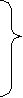
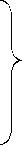
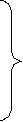
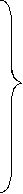

| TOEIC TEST GRAMMAR GUIDE | |
| Beethoven Asami | |
| Eigo Kenshu Service (2012) | |
TOEIC TEST
英文法攻略バイブル
浅見ベートーベン著
基本 の5 文型や時制の一致等をマスターすることにより､英語が正確に理解できるようになります｡英文法の知識は読む場合のみならず､話す際にも役立ちます｡英文法の知識がなければ正確な文章を書くことはできないと言っても過言ではないでしょう｡
この本では､過去 の TOEI C テストでよく取り上げられている英文法の項目に絞ってあります｡大学受験用参考書は英文法の全分野を網羅してあるの で 80 0 頁位の厚みのものもあります｡会社員の皆様が､毎日の忙しい生活の中から､時間を見つけて､これらの受験用参考書に真っ向から取り組むのは投資対効果の面からお勧めしません ｡ TOEI C テストで出題されないものも多く含まれていて､しかもイギリス文法とアメリカ文法がごっちゃに入っていたりするからです ｡ TOEI C テストではほとんどアメリカ文法が出題されます｡この本に載っているのはアメリカ文法を中心にしてありますので安心して学んでください｡いつも手元に置き､単語だけを覚えるのではなく例文をそっくり暗記するように努力してください｡目だけで覚えるのではなく､耳や口等も一緒に使って記憶したほうが忘れにくいと言われています｡従ってなかなか覚えられない人は､声に出したり、繰り返しノートに書いたりすることをお勧めします｡
この本は日本アイビーエム株式会社および子会社において１日コースのテキストとして使用し、総受講 者 2,00 0 名でリーディングの平均スコア が 8 2 点向上する実績があります。今 回 Kindl e を通じて低価格のダウンロード販売を開始することにしました。
皆様 の TOEI C テストのスコア・アップに貢献できれば著者としてとてもうれしく感じます。私は、この本を書きなが ら TOEI C テスト連続満点を取得いたしました。
最後になりますがとても読みやすく仕立てていただいた三浦ひとみ様に心から感謝致します。
はじめ に ―――――― 英文法を学ぶ大切さ
基本5文型の大切さ 6
基本 5文型 7
Exercise 1 17
主語と動詞の一致 23
Exercise 2 32
時制の一致 42
Exercise 3 46
関係代名詞 49
Exercise 4 52
並列法 56
Exercise 5 60
仮定法 65
Exercise 6 69
命令･提案･忠告･主張･決定の文 72
Exercise 7 74
前置詞をつけてはいけない他動詞 78
使役動詞の用法 81
冠詞の基本ルール 82
Exercise 8 95
動名詞を伴う前置詞句や動詞句 106
Exercise 9 110
意味を混同しやすい単語 113
Exercise 10 129
前置詞 132
分詞構文 147
形容詞の語順 152
修飾語関係の一覧表 153
注意が必要な動詞の活用 154
まず最初に学んでいただきたいのは､自動詞と他動詞の違いについてです｡英語では､自動詞 は intransitive ver b で､他動詞 は transitive ver b と呼びます｡省略形としては､自動詞は例えば､自 やI ､他動詞は他 やT と辞書に表示されています｡
自動詞は､
S＋V､S＋V＋C の文型で使われます｡目的語は持ちません｡
例 : I work from 9 to 5. 私 は9 時か ら5 時まで働きます｡
S V
I am an IBMer . 私 は IB M の社員です｡
S V C
他動詞は､
S＋V＋O､S＋V＋O＋O､S＋V＋O＋C の文型で使われます｡必ず目的語を持ちます｡従って､他動詞が来たら目的語を捜しながら読んだり､聞くように日頃から練習することをお勧めします｡
例 : I raised my right hand . 私は右手を上げました｡
I bought her a Rolex watch . 私は彼女にロレックスを買ってあ
S V O O げた。
I 'll make you happy . 私はあなたを幸せにします｡
S V O C
注 :TOEIC TES T で はS＋V＋O＋C の文型がよく出題されます｡
第1文型 S＋V
主語＋完全自動詞
The moon rose .
S V
月が出た｡
We all breathe , drink , and eat .
S V V V
我々は皆､呼吸し､飲み､食べる｡
He jogs two miles every morning.
S V
彼は毎 朝2 マイルジョギングする｡
The meeting lasted three hours.
S V
その会議 は3 時間続いた｡
Stars are shining brightly.
S V
星がきらきら輝いている｡
I have been waiting for two hours.
S V
私 は2 時間待っていました｡
I run every day.
S V
私は毎日走る｡
I am running now.
S V
私は今､走っている｡
I ran around the lake.
S V
私は湖の周りを走った｡
I used to run in the old days.
S V
私は、昔､よく走ったものだ｡
I was running when I saw her the other day.
S V
先日､彼女を見た時､私は走っていた｡
主語＋不完全自動詞＋補語
主語と補語は同じ物または､主語が結果として補語になると考えるとよい｡
｢～である｣
This laptop is mine .
S V C
この携帯パソコンは私のものだ｡
The lions are asleep .
S V C
ライオンは寝ている｡
｢～になる｣
She became a politician .
S V C
彼女は政治家になった｡
His dreams have come true .
S V C
彼の夢は実現した｡
｢～に見える｣
She looks very happy .
S V C
彼女は幸せそうに見える｡
He seemed surprised at the news.
S V C
彼はその知らせを聞いて驚いたようだった｡
｢～と感じる｣
My steak tastes delicious .
S V C
私のステーキはおいしい｡
Your story sounds great .
S V C
あなたの話はとてもすばらしく聞こえる｡
｢～のままである｣
She continued to stay calm throughout the debate.
彼女は､討論の間中､冷静さを保った｡
You should keep silent on this matter.
S V C
君はこの件については黙っているべきだ｡
The weather remained changeable over the weekend.
S V C
週末の間､天気は安定しなかった｡
It is very important to get a steady income .
V C S
安定収入を得ることはとても大切である｡
（ i t は仮の主語 で t o 以下が本当の主語）
It is crucial that all employees observe company policies .
V C S
全従業員が会社の方針に従うことはとても重要なことである｡
（ i t は仮の主語 で tha t 以下が本当の主語）
It seems useless to offer any more help .
これ以上手助けすることは無駄のように思われる｡
（ i t は仮の主語 で t o 以下が本当の主語）
主語＋完全他動詞＋目的語
She loves him . ( 彼女は彼を愛してい る) のように ､O の場所には､目的格
を使います｡主格 の h e や所有格 の hi s を使うことはできない｡
TOEIC Tes t でこのような問題がよく出題されるので注意が必要｡
Finish your homework .
宿題を終えなさい｡
注 : 前 に You shoul d が省かれている｡
We all enjoyed the party .
S V O
我々は皆､パーティを楽しんだ｡
Everybody loves somebody .
S V O
誰でも皆､誰かを愛している｡
She enjoys playing golf .
S V O
彼女はゴルフをするのが好きだ｡
She has finally stopped talking .
S V O
彼女はやっと話をやめた｡
I cannot decide what to do next .
S V O
私は次に何をすべきか決められない｡
He knows how to do it .
S V O
彼はやり方を知っている｡
The nervous waitress spilled coffee on the celebrity's lap.
S V O
緊張していたウェイトレスは名 士( セレ ブ) のひざにコーヒーをこぼした｡
She asked for her father's help .
彼女は父親の助けを求めた｡
I 'll look after your dog while you are away.
S V O
あなたが留守の間､あなたの犬の面倒を見ましょう｡
Are you looking for anything special ?
あなたは何か特別なものをお捜しです か ?
She is living a wonderful life .
彼女は素晴らしい生活をしている｡
主語＋他動詞＋間接目的語＋直接目的語
giveのグループ
She told me the story .
S V IO DO
彼女が私にその話をしてくれた｡
He gave her some advice .
S V IO DO
彼は彼女に少しアドバイスした｡
D O を前にもってくると ､ t o を伴ない 第3 文型に変化する｡
She told the story to me.
S V O
彼女がその話を私にしてくれた｡
He gave some advice to her.
S V O
彼は彼女にアドバイスを少ししてあげた｡
同じグループの動詞
allot 分配す る promise 約束する
award 授与す る read 読んで聞かせる
give 与え る sell 売り込む
grant 与え る send 送る
hand 手渡 す show 見せる
lend 貸 す tell 話す
offer 提供す る throw 投げかける
pass 通り過ぎ る write 書き送る
pay 払う
buyのグループ
My father bought me a Ferrari .
S V IO DO
父は私にフェラーリを買ってくれた｡
She cooked her husband some sausages .
S V IO DO
彼女は主人にソーセージを料理した｡
D O を前に持ってくる と fo r を伴ない 第3 文型に変化する｡
My father bought a Ferrari for me.
S V O
父はフェラーリを私に買ってくれた｡
She cooked some sausages for her husband.
S V O
彼女はソーセージを主人のために料理した｡
同じグループの動詞
buy 買ってあげ る make 作ってあげる
call 呼 ぶ order 注文してあげる
cook 料理してあげ る prepare こしらえる
find 見つけてあげ る save とっておく
get 手に入れてあげ る spare 分け与える
主語＋不完全他動詞＋目的語＋補語
目的語は補語と同じ､またはそのようになると考えるとよい｡この文型はテストによく出題されるので､できるだけ多くの例文を暗記すると役立つ｡
I saw her standing there.
S V O C
私は彼女がそこに立っているのを見た｡
My friends call me David .
S V O C
友人は私のことをディビッドと呼ぶ｡
We named our baby boy Ken .
S V O C
私たちの男の赤ちゃんに健と名付けた｡
The mud made walking difficult .
S V O C
ぬかるみが歩行を困難にした｡
We painted the ceiling white .
S V O C
天井を白く塗った｡
The stove keeps us warm .
S V O C
そのストーブが私たちを暖めてくれる｡
You must make your opinion known .
S V O C
あなたは自分の意見を世間に知らせなければいけない｡
She has recently had her appendix removed .
S V O C
彼女は最近､盲腸の手術を受けた｡
I made myself understood in English.
S V O C
私は英語で自分の意志を伝えた｡
Most people considered her guilty .
S V O C
ほとんどの人が彼女を有罪と見なした｡
I think it very natural that he should feel uneasy .
S V O C O
彼が落ちつかなく感じるのもごく当然だと思う｡
注 : i t は形式目的語で､後 のO が本当の目的語である｡
She felt it necessary for him to leave immediately .
彼女は､彼が大至急出かけることが必要だと感じた｡
注 : i t は形式目的語で､後 のO が本当の目的語である｡
以下 の ( ) が主語に はS を､動詞に はV を､目的語に はO を､間接目的語に は I O を､直接目的語に は D O を､補語に はC を修飾語に はM を入れなさい｡
1. She works in the computer business .
( ) ( ) ( )
2. Business was bad last year .
( ) ( ) ( ) ( )
3. I have some unfinished business to take care .
( )( ) ( ) ( )
4. They elected him chairman .
( ) ( ) ( ) ( )
5. That the new employee answered the business related question correctly pleased his boss .
( ) ( ) ( )
6. The chairman changed the subject .
( ) ( ) ( )
7. Normally , we don't take medicine .
( ) ( ) ( ) ( )
8. He was so exhausted that he fell asleep at his desk .
( ) ( ) ( ) ( )( ) ( ) ( )
9. The manager found him asleep alone in the meeting room .
( ) ( ) ( ) ( ) ( )
10. Communication between our department and their
( )
department is frequent .
( ) ( ) ( )
11. Smoking like that must be dangerous .
( ) ( ) ( ) ( )
12. Our manager gave us many awards .
( ) ( )( ) ( )
13. We have proved our vendor wrong on that quality issue .
( ) ( ) ( ) ( ) ( )
14. Most employees in our company take a two-week vacation
( ) ( ) ( ) ( ) ( )
in summer .
( )
15. He is jobless at the moment .
( )( ) ( ) ( )
16. I would like to ask you a favor .
( ) ( ) ( ) ( )
17. I got my hair cut .
( )( )( )( )( )
18. The road became narrower .
( ) ( ) ( )
19. The number of attendees is expected to double this year .
( ) ( ) ( ) ( )
20. The vice president criticized our boss severely
( ) ( ) ( ) ( )
in the monthly meeting .
( )
21. The work was time-consuming , tedious , and not rewarding .
( ) ( ) ( ) ( ) ( )
22. The company picnic will be canceled only if it rains .
( ) ( ) ( )
23. Alexander Graham Bell , a teacher of the deaf in Boston ,
( ) ( )
invented the first telephone .
( ) ( )
24. Thousands of Irish people emigrated to the United States
( ) ( ) ( )
because of the potato famine in Ireland in the mid-19th
( ) ( )
century .
25. A tomato is classified as a fruit but most people consider
( ) ( ) ( ) ( ) ( )
it a vegetable .
( ) ( )
1. 答 : S, V, M
訳 : 彼女はコンピューター業界で働いている｡
2. 答 : S, V, C, M
訳 : 昨年､ビジネスは悪かった｡
3. 答 : S, V, O, M
訳 : 私はしなければならないやり残しの仕事がいくらかある｡
4. 答 : S, V, O, C
訳 : 彼等は彼を会長に選出した｡
5. 答 : S, V, O
訳 : そのビジネスに関する質問に新入社員が正解したことが､上司を満足させた｡
6. 答 : S, V, O
訳 : 議長が話題を変えた｡
7. 答 : M, S, V, O
訳 : 普段は､私たちは薬を服用しない｡
8. 答 : S, V, C, S, V, C, M
訳 : 彼はあまりにも疲れていたので机で眠ってしまった｡
9. 答 : S, V, O, C, M
訳 : 上司は､彼が会議室で一人で眠っているのを見つけた｡
10. 答 : S, M, V, C
訳 : 我々の部門と彼等の部門間のコミュニケーションはとてもひんぱんに行なわれている｡
11. 答 : S, M, V, C
訳 : そんなにタバコを吸ったら､体に害になるに違いない｡
12. 答 : S, V, IO, DO
訳 : 上司は我々にたくさんの賞品をくれた｡
13. 答 : S, V, O, C, M
訳 : その品質の問題で､業者が間違っていたことを証明した｡
14. 答 : S, M, V, M, O, M
訳 : 我社のほとんどの社員は夏 に2 週間の休暇を取る｡
15. 答 : S, V, C, M
訳 : 現在､彼は失職している｡
16. 答 : S, V, IO, DO
訳 : お願いしたいことがある｡
17. 答 : S, V, M, O, C
訳 : 私は髪を切ってもらった｡
18. 答 : S, V, C
訳: 道が狭くなった｡
19. 答 : S, M, V, M
訳 : 今年は出席者数が倍になると予想される｡
20. 答 : S, V, O, M, M
訳 : 副社長が月例会議の席で我々の上司を厳しく非難した｡
21. 答 : S, V, C, C, C
訳 : その仕事は時間がかかり､退屈で､しかもやりがいがない｡
22. 答 : S, V, M
訳 : 会社主催のピクニックは､雨が降った場合のみキャンセルされる｡
23. 答 : S, M, V, O
訳 : ボストンの聾 唖( ろう あ) 学校教師のアレキサンダー･グラムベルは最初の電話を発明した｡
注 : MはS の言い換えである｡
24. 答 : S, V, M, M, M
訳 : 1 9 世紀中頃に起きたジャガイモ飢 饉( きき ん) のせいでたくさんのアイルランド人がアメリカへ移住した｡
25. 答 : S, V, M, S, V, O, C
訳 : トマトはフルーツとして分類されているが､多くの人は野菜だと考えている｡
動詞は単数の主語では単数に､複数の主語では複数
The director was absent from work.
その重役は仕事を休んだ｡
One of the directors was absent from work.
重役の一人は仕事を休んだ｡
注: この文の主 語 director s ではな く on e なの で wa s が必要となる｡
All the directors were absent from work.
全重役が仕事を休んだ｡
注: 主語 が all the director s なので ､ wer e が必要となる｡
The number of new employees for this year is 92.
今年の新入社員の数 は 9 2 名だ｡
注 : numbe r が主語なので動詞 は i s が必要｡主語 を new employee s と間違え て ar e としないように注意が必要である｡次の文 の a number o fは man y を意味するので動詞は複数にしなければならない｡
A number of new employees were hired this year.
たくさんの新入社員が､今年､採用された｡
andで結ばれた主語の動詞は必ず複数
She and I are colleagues.
彼女と私は同僚だ｡
注 : I に動詞を合わせるつもり で a m にしないように注意が必要｡ちなみに ､ Iand sh e の順にすると間違い｡必 ずI は､後に来る｡
orで結ばれた場合､主語は､後に来るものになり､動詞の数はそれに一致
Personal checks or cash is honored.
個人名小切手または現金で支払いできる｡
Cash or personal checks are honored.
現金または個人用小切手で支払いできる｡
注 : personal check s が複数なの で ar e が必要｡
either～or､neither～norは､or､norの後の数に一致
Either the manager or the employees have to work overtime.
管理者か従業員達のどちらかが残業しなければならない｡
Either the employees or the manager has to work overtime.
従業員達か管理者かどちらかが残業しなければならない｡
Neither the company nor the customers were satisfied with the court decision.
会社側も取引先も裁判所の判決に満足しなかった｡
Neither the customers nor the company was satisfied with the court decision.
取引先も会社側も裁判所の判決に満足しなかった｡
not only～but (also)はbutまたはalsoの後の主語の数に一致
Not only the contents but (also) the cover of the magazine needs to be improved.
内容ばかりでなく､雑誌の表紙も改良する必要がある｡
Not only the cover of the magazine but (also) the contents need to be improved.
雑誌の表紙ばかりでなく､内容も改良する必要がある｡
along with, as well as, besides, but, in addition to, including, together withが導く句や単語は､主語にはならない
His kinky hair , along with his long sideburns, is sure to make a bad impression in an interview.
長いもみあげと縮れ毛が､面接の時に悪い印象を与えるのは確実だ｡
注 : sideburn s ではな く hai r がこの文の主語なので ､ i s が正しい｡
The singer , as well as the musicians, is invited to the party.
演奏家達はともかく､歌手もパーティーに招待されている｡
注 : musician s ではな く singe r がこの文の主語｡
Nobody but/besides their big vendors receives the outstanding contribution awards.
大手の業者以外は誰も貢献賞を受賞しない｡
Our department report , in addition to all sections reports is to be turned in.
全部の課の報告書に加えて､部門の報告書も提出しなければならない｡
Our parents , including John's, are graduates of the university.
ジョンの両親を含め､我々の両親もその大学の卒業生だ｡
The laptop , together with all its major accessories is on sale.
全ての主要なアクセサリーとノートパソコンがセール中である｡
金額･数量･距離･時間を､ひとかたまりと考える場合は単数扱い
Three hundred dollars is the price for the camera.
30 0 ドルがそのカメラの値段だ｡
Six feet is my height.
6 フィートが私の身長だ｡
Ten miles is the distance he runs every day.
1 0 マイルは彼が毎日走る距離だ｡
Three hours has passed since I began reading.
私が読書し始めてか ら3 時間たった｡
数量詞
複数の可算名詞のみと使われる
both, many, a few, several, fewer
Both men look satisfied.
どちらの男も満足したように見える｡
I received many letters this morning.
今朝､たくさんの手紙を受け取った｡
I need a few things from the grocery shop.
食料雑貨店から､数点の品物を買う必要がある｡
Several parcels arrived yesterday.
昨日､数個の小包が到着した｡
I received fewer calls today than yesterday.
昨日より今日のほうがかかってきた電話は少なかった｡
単数の可算名詞とともに使われる
another, each, every
We need another computer .
私たちはもう一台コンピューターが必要だ｡
I need another ten days .
私はあ と 1 0 日間欲しい｡
注 : このように数詞の次に複数名詞が来る場合もある｡
Each answer is worth five points.
それぞれ答 は5 点に相当する｡
Every student in our class is smart.
私達のクラスの生徒はすべて頭が良い｡
不可算名詞とともに使われる
a little, amount, less, much
The amount of oxygen available to the brain is important.
頭脳に供給される酸素の量は重要である｡
It 's a matter of less importance .
それは､それほど重要ではない｡
A little milk is all I need.
私が欲しいのはほんの少しのミルクだ｡
I don't have much money with me now.
私は現在､あまりお金を持っていない｡
複数の 可算名詞や､不可算名詞とともに使われる
all, any, a lot of (lots of), enough, more, most, plenty of
All our computers are out of order.
我々のコンピューターは全て故障している｡
All this mail must be answered today.
これらのメールは､今日中にすべて返事しなければならない｡
Are there any more questions ?
他に何か質問があります か ?
Few of our managers have any knowledge of people management.
我々の少数の管理者たちだけがピープル･マネジメントの知識を有している｡
A thousand dollars is a lot of money to me.
千ドルは私にとって大金だ｡
I read a lot of books last year.
昨年､たくさんの本を読んだ｡
I have enough problems .
私はたくさん問題をかかえている｡
Is there enough room for me?
私が入るだけのスペースがあるでしょう か ?
I only have two more days to finish the report.
報告書を仕上げるのにあ と2 日しかない｡
He has more money than I.
彼は私よりお金を持っている｡
He got the most votes .
彼が一番多くの票を獲得した｡
Most classical music puts me to sleep.
ほとんどのクラシック音楽を聞くと眠くなる｡
I have plenty of cash right now.
今現在は､たくさん現金を持っている｡
We use plenty of eggs to make the cake.
そのケーキを作るには､たくさんの卵を使う｡
hereやthereで始まる文の動詞の数はその後に来る主語の数によって決まる
Here is the report you've been searching for.
はい､これがあなたが捜していた報告書だ｡
Here are the three reports you've been searching for.
はい､これらがあなたが捜してい た3 つの報告書だ｡
There is only one person available for the job.
その仕事につける人はたった の1 人しかいない｡
There are at least two people available for the job.
その仕事につける人は少なくと も2 人はいる｡
There is no cash left in the safe.
金庫には現金は全く残っていない｡
There is no mail for you today.
今日は､あなた宛のメールはない｡
注: 不可算名詞が主語の場合には､動詞は単数にする｡
all, most, some
あとに of＋不可算名詞やof＋itが来ると動詞は単数
All of his estate was donated to charity.
彼の全遺産は慈善行為へ寄付された｡
Most of our factory machinery needs to be replaced.
我社の工場の大部分の機械類は取り替える必要がある｡
Some of the money was stolen from my wallet.
私の財布からお金がいくらか盗まれた｡
複数の可算名詞や代名詞と伴に使われると動詞は複数
All the flowers have gone.
全ての花は散ってしまった｡
All of them are bankers.
彼等は全員､銀行の幹部職員だ｡
Most of our managers are college graduates.
我社の管理者のほとんどは大卒だ｡
Some of our subsidiaries are located in the States.
我社の子会社の数社はアメリカにある｡
any､anybody､anyone､each､either､everybody､neither､none､
no one､one､someone､somebody
これらが､主語の時は動詞は単数になる
One of us has to leave right now.
我々の誰かがすぐに出発すべきだ｡
Is anybody/anyone coming back soon?
誰かがもうすぐ帰って来る か ?
Each of the laptops on the table has its own case.
机の上のそれぞれのノートパソコンにはケースがついている｡
Either is fine by me.
どちらでも､私は結構だ｡
Everybody is happy.
皆が幸せだ｡
Neither is good.
どちらも良くない｡
注: 主語に注意
None of the packages was for me.
小包はどれも私宛ではなかった｡
None of my friends is married.
私の友人は誰も結婚していない｡
none but＋誰/物, no oneやone, one ofも単数
None but he knows the truth.
彼以外は真実を知らない｡
No one loves that manager.
誰もその管理者を好きではない｡
One is responsible for deciding one's own future.
人は自分の将来は自分で決める責任がある｡
One has to feed oneself.
人は自分自身の食いぶちを稼ぐべきである｡
注 : on e が主語の場合 は himsel fや itsel f ではなく､再帰代名 詞 onesel f で受ける｡
One of my co-workers is taking a day off today.
私の同僚 の1 人は､今日､休みを取っている｡
One of the folders is missing from my file cabinet.
フォールダーのひとつが私の書類キャビネットからなくなっている｡
more than oneが主語の場合､動詞は単数
More than one of the attendees was late for the monthly meeting.
一人以上の出席者が月例会議に遅刻した｡
注 : more than on e ならば､一人以上なので動詞は複数形にしなければならないと考えるのは当然と言えます｡これは例外と思って覚えることが大切｡
More than one of the managers in our division is leaving our company and joining our major competitor.
我々の部門の一人以上の管理者は会社を辞め主要な競合会社へ入社するだろう｡
1. Each of the departments ----- one secretary.
A. has B. have C. is D. has more than
2. More than one local travel agencies ----- in bad financial condition in the near future.
A. is B. are C. are to be D. is expected to be
3. Both of us ----- absent from the yesterday's meeting.
A. was B. were C. will be D. are
4. Neither company ----- the contract.
A. agree with B. agrees with C. were agreed D. agree
5. Everybody ----- our new boss.
A. love B. are loving C. loves D. need to love
6. Any of us ----- lucky enough to remain employed.
A. have to be B. are C. must D. is
7. Ten dollars ----- all I need at the moment.
A. was B. are C. is D. will be
8. There ----- no machinery running now.
A. were B. is C. was D. are
9. The number of retirees ----- about 1500 last year.
A. is B. are C. was D. were
10. That company and this company ----- owned by the same owner a few years ago.
11. Not only the employer but also the employees ----- invited to the party.
A. is B. are C. has D. has been
12. Fruit as well as newspapers ----- sold at the newsstand.
A. is B. are C. have been D. was
13. Fifteen miles ----- the distance from here to our factory.
A. has B. were C. are D. is
14. One ----- to earn one's own living.
A. has B. have C. used D. get used
15. You or I ----- to attend the seminar tomorrow.
A. must be B. had C. am D. are
16. Most of our managers ----- married.
A. are B. is not yet C. is D. will be
17. Neither the TV nor the radios ----- broken now.
A. was B. has C. are D. were
18. My camera, together with three lenses ----- stolen from my car yesterday.
A. has been B. had been C. was D. used to be
19. Either Steve or I ----- to take care of all the guests.
A. has B. have C. must be D. will able
20. You and I ----- invited to the farewell party.
A. am B. must C. is to be D. are
21. The world of ballpoint pens ----- changing.
A. are B. is C. will D. had
22. None of the machines ----- delivered yet.
A. been B. had been C. have been D. has been
23. Evaluation criteria ----- finally developed by our quality control department.
A. has been B. have been C. was D. is
24. Many people in South American countries ----- in intolerable poverty.
A. will lives B. lives C. live D. be living
25. Over 20 competitors ----- competing in the laptop market.
A. is B. will C. are D. has been
26. Many businesspeople in Japan find TOEIC tests is getting
A B C
more difficult lately .
D
27. Most of the research scientists in our laboratory has
A B C
at least a master's degree.
D
28. Old people in Japan usually lives with their children,
A
whereas the old in the United States often live by themselves .
B C D
29. When a whale is captured in a net , other whales
A B
gathers around it and communicate through the net.
C D
30. The awarding of plaques are one way to recognize the
A B C
achievements of the workers.
D
31. A significant feature of American life in these years were
A B
the baby boom, which started late in the 1940s and reached
C D
its peak in 1956.
32. The leading sectors in the industry was those dominated by
A B C
new technologies or by defense need.
D
33. In 1922 only 16 per cents of the total population of 136
A B
million was classified as urban .
C D
34. The problems confronting the poor nations was social
A B
as well as economic in the 1970s .
C D
35. By 1972 the gap between the rich nations and the poor
A
nations were becoming a central issue of international
B C
politics .
D
1. 答 : A
訳 : それぞれの部門は秘書をひとりつけている｡
解 説 : each o f ～ が主語の場 合, 動詞の形は単数となる｡
2. 答 : D
訳 : 近い将来､地元の２社以上の旅行代理店は財政的に悪い状況になると予想されている｡
解 説 : more than on e ～ が主語の場合､動詞の形は単数となる｡
3. 答 : B
訳 : 我々 は2 人とも昨日の会議に欠席した｡
解 説 : both o f ～ が主語の場合､動詞の形は複数となる ｡ yesterda y という過去を示す単語があるの で wer e が正解となる｡
4. 答 : B
訳 : どちらの会社もその契約には満足していない｡
解 説 : neithe r が直接名詞について主語になると､動詞は単数となる｡しかし ､ neither o f が複数名詞や代名詞とともに主語になった場合には､動詞の形は単数でも複数でもどちらでもよい｡
例 : Neither of them has/have a car.
彼らのどちらも車を所有していない｡
5. 答 : C
訳 : 全員が新しい上司に対して好意を持っている｡
解 説 : everybod y が主語の場合､動詞の形は単数となる｡
6. 答 : D
訳 : 現在では我々の誰もが職についていられるだけで十分幸せである｡
解 説 : any o f ＋複数名詞･代名詞が主語の場合､動詞の形は単数となる｡
7. 答 : C
訳 : 現時点で私が必要なの は 1 0 ドルだ｡
解 説 : 金額･数量･距離･時間がひとかたまりと考えられる場合には動詞の形は単数となる｡
8. 答 : B
訳 : 現時点で稼働している機械はない｡
解 説 : machiner y は不可算名詞で､単数扱いをする｡
9. 答 : C
訳 : 昨年の退職者の数は､およ そ 150 0 名だった｡
解 説 : the number o f ～ が主語の場合､動詞の形は単数となる ｡ a number o f ～ は man y の意味で､動詞は複数形にする必要がある｡
例 : A number of businessperson are attending the conference.
たくさんのビジネス･パースンがその会議に出席している｡
10. 答 : D
訳 : あの会社とこの会社は数年前は同じオーナーが所有していた｡
解 説 : 普通名詞や代名詞 が an d でつながって主語になると動詞の形は複数となる｡
11. 答 : B
訳 : 雇用者ばかりでなく従業員もそのパーティに招待されている｡
解 説 : not onl y ～ but als o の構文では ､ but als o の後に来る単語の数に動詞を合わせなければならない｡この文で は the employee s なの で ar e が正しくなる｡も し the employe r が来れば､動詞 は i s が必要となる｡
12. 答 : A
訳 : 新聞はもちろんフルーツも､そのニューススタンドで売っている｡
解 説 : as well a s のあとではなく､その前の言葉が主語になる｡この場合に は frui t なので､動詞の形は単数となる｡
13. 答 : D
訳 : ここから我々の工場までの距離 は 1 5 マイルである｡
解 説 : 金額･数量･距離･時間がひとかたまりと考えられる場合には動詞の形は単数となる｡
14. 答 : A
訳 : 人は､だれでも自分自身の生活の糧を得なければならない｡
解 説 : on e の動詞の形は単数となる｡
15. 答 : C
訳: あなたか私かどちらかが明日､セミナーに出席することになっている｡
解 説 : o r でつながった主語は ､ o r のあとの主語に動詞の数をあわせる必要がある｡
16. 答 : A
訳 : 我々のほとんどの管理者は既婚である｡
解 説 : most o f ＋複数名詞や代名詞が主語を作ると､動詞の形は複数となる｡
17. 答 : C
訳 : 現在､テレビもラジオも故障してない｡
解 説 : neithe r ～ no r が主語を作ると ､ no r のあとの主語に動詞の数をあわせる｡
18. 答 : C
訳 : レン ズ3 本とカメラが､昨日私の車から盗まれた｡
解 説 : together wit h のあとに来る単語ではなく､その前の単語が主語になる｡従って､この文で は my camer a に動詞の数をあわせる｡
19. 答 : B
訳 : あなたか私のどちらかが全員の客を面倒見なければならない｡
解 説 : eithe r ～ o r が主語を作ると ､ o r のあとの主語に動詞の数をあわせる必要がある｡
20. 答 : D
訳 : あなたと私はさよなら会に招待されている｡
解 説 : an d でつながった主語の動詞の数は複数になる｡
21. 答 : B
訳 : ボールペンの世界は変化している｡
解 説 : the worl d が主語なので､動詞は単数となる ｡ ballpoint pen s が主語だと思ってはいけない｡
22. 答 : D
訳 : 機械はまだどれも届けられていない｡
解 説 : none o f ＋複数名詞が主語の場合､動詞の形は単数になる｡
23. 答 : B
訳 : 検査基準がついに､品質管理部により開発された｡
解 説 : criteri aは criterio n の複数形で基準や標準を意味し､動詞の形は複数となる ｡ b y があるので受身形が必要となる｡
24. 答 : C
訳 : 南米の国の多くの人達は耐えがたいほどの貧困の中で生活している｡
解 説 : many peopl e が主語なので､動詞の形は複数となる｡
25. 答 : C
訳 : 2 0 以上の会社がノートパソコン市場で張り合っている｡
解 説 : over 20 competitor s が主語なので動詞の形は複数となる｡
26. 答 : C (i s が不 用 )
訳 : 日本の多くのビジネス･パースンは､最 近 TOEIC Tes t が難しくなっていると感じている｡
解 説 : i s は不用である｡このように不用な単語の問題もよく出題されるので注意が必要｡
27. 答 : C (has→have)
訳 : 我社の研究所のほとんどの科学者達は少なくとも修士号を持っている｡
解 説 : most o f に複数名詞がついた主語は動詞の形は複数になる｡
28. 答 : A (lives with→live with)
訳 : 日本の老人達は､一般的に子供達と一緒に生活している｡一方､アメリカの老人達は､たいてい自分達だけで暮らしている｡
解 説 : old peopl e は複数名詞なので動詞の形は複数になる｡
29. 答 : C (gathers around→gather around)
訳 : ある一頭の鯨が網にかかると､他の鯨達がまわりに集まり､網ごしに交信する｡
解 説 : other whale s は複数名詞なので動詞の形は複数になる｡
30. 答 : A (are→is)
訳 : 表彰の額を授与することは､労働者達の業績を認めるひとつのやり方である｡
解 説 : awardin g が主語で､動詞の形は単数となる｡
31. 答 : B (were→was)
訳 : この時代におけるアメリカ社会のひとつの重要な特長として､ベビーブームがある｡それは ､ 194 0 年代後半に始まり ､ 195 6 年にその頂点に達した｡
解 説 : a significant featur e が単数の主語で､動詞もそれにあわせて単数の形になる｡
32. 答 : A (was→were)
訳 : 産業界の主要な分野は新しいテクノロジーか防衛に必要なものが支配的であった｡
解 説 : the leading sector s が複数の主語で､動詞もそれにあわせて複数の形になる｡
33. 答 : A (per cents→per cent)
訳 : 192 2 年には総人 口1億3千6 百万の中､ほん の 16 % だけが都会に住むと分類された｡
解 説 : per cen t は複数で もs がつかない｡
34. 答 : B (was→were)
訳 : 197 0 年代に貧しい国が直面していた問題は経済的なものに加えて､社会生活に関するものであった｡
解 説 : the problem s が主語で､動詞もそれにあわせて複数の形になる｡
35. 答 : B (were→was)
訳 : 197 2 年までには､豊かな国々と貧しい国々のギャップは国際政治の中心的な問題になっていた｡
解 説 : the ga p が主語で､動詞もそれにあわせて単数の形になる｡
主節の動詞の時制を現在から過去に変えると､従属節の動詞の時制は次のように変化する｡
|
主節の動詞 |
従属節の動詞 |
|
現 在→ 過去 |
① 現在 → 過去 |
|
② 現在完了 過去 → 過去完了 過去完了 |
|
|
③ 現在形の助動詞 → 過去形の助動詞 |
①I think that she is still in the hospital.
私は彼女はまだ入院していると思う｡
I thought that she was still in the hospital.
私は彼女はまだ入院していたと思った｡
②I think she has left for the States.
私は彼女はアメリカへ行ってしまったと思う｡
I thought she had left for the States.
私は彼女はアメリカへ行ってしまったと思った｡
③I expect that my mother will get well very soon.
私は母がすぐに良くなると思っている｡
I expected that my mother would get well very soon.
私は母がすぐに良くなると思っていた｡
現在
My father lives in Kentucky.
私の父はケンタッキーに住んでいる｡
I jog five miles a day.
私 は1日5 マイル･ジョギングする｡
Whenever I go to the bookstore, I buy some books.
その本屋へ行くと､いつでも何冊か本を買う｡
現在形が未来の代わりをする
以下の単語で導かれる時や条件を表す副詞節の場合
a fte r､ as soon a s､ befor e､ i f､ unles s､ unti l､ when
I'll leave here after you go out .
あなたが出たあとに私はここを出る｡
As soon as I receive her email, I'll forward it to you.
彼女か ら emai l を受け取りしだい､あなたへ転送する｡
Mary wants to see you before you go .
メアリーはあなたが出かける前に会いたがっている｡
If you insist , I'll stay a little longer.
もし強く要求されるなら､私はもう少しここにいる｡
Unless I hear from you by tomorrow, I'll sell the item to somebody else.
もし明日までにご連絡をいただけない場合には､その品物は他の人に売る｡
I' ll wait here until you come .
あなたが来るまで､ここで待つ｡
When it stops snowing, I'll drive you home.
雪がやんだら､あなたを車で家まで送る｡
現在完了形
has/hav e ＋過去分詞で完了･結果･経験･継続を表す｡日本語には類似の表現はないので注意が必要｡
× I have come back from work right now.
○ I have just come back from work.
私はたった今､仕事から帰ってきたところだ｡
注 : right no w とは一緒に使えない｡
× I have come back from work ten minutes ago .
○ I came back from work ten minutes ago.
私 は 1 0 分前に仕事から帰ってきた｡
× Last year he has founded the Internet company.
○ Last year he founded the Internet company.
昨年､彼はインターネット会社を設立した｡
注: 明らかに過去を示す副 詞/ 句とともには使えない｡
stil lと ye t の使い方の違い
両方とも､まだ～ない､の意味ですが ､ stil l は文の前のほうに ､ ye t は終わりのほうで使う｡
× We have not finished our report still.
○ We still have not finished our report.
× We yet have not finished our report.
○ We have not finished our report yet.
我々はまだ報告書を終わっていなかった｡
ちなみに疑問文の現在形では次のように使う｡
Are you still with the same company?
あなたはまだ同じ会社にいるのです か ?
Is he back from lunch yet?
彼はもう昼食から帰ってきました か ?
過去形
I took a taxi because I was in a hurry.
私は急いでいたので､タクシーをひろった｡
注 : too kを tak e にすると時制 が wa s と合わないので間違いとなる｡
過去完了
ある過去よりも､さらに前に起きた出来事を表す｡
The plane had taken off before we reached the airport.
私たちが飛行場に着く前に､飛行機は離陸してしまっていた｡
注: 着くよりも離陸したことが前に起きた｡
I lost my camera that I had bought a month ago.
私 は1 ヶ月前に買ったカメラを紛失した｡
注 : 買った事は紛失したことより前に起きた｡
しかし､出来事が起こった順に述べる時は､どちらも過去形でよい｡
I bought a camera a month ago, but I lost it.
私 は1 ヶ月前にカメラを買ったが､それを紛失した｡
1. I'm going to ----- a check.
A. cashing B. cashed C. cash D be cashing
2. I ----- a check yesterday.
A. cash B. cashed C. was cashed D. had cashed
3. Last week we ----- two meetings on customer satisfaction.
A. will have B. have C. had D. have had
4. I wanted to make sure you ----- kept updated on this issue.
A. are B. were C. was D. be
5. We haven 't ----- a meeting recently.
A. have B. having C. had D. has
6. The company ----- in 1998 in Chicago.
A. will be founded B. was founded C. was found
D. has been founded
7. I couldn't reach her at the office so I thought I ----- her at home.
A. will call B. would have called C. would call
D. should be calling
8. I think the meeting ----- .
A. has just started B. had just started C. be started
D. starting
9. I thought the meeting ----- .
A. has just started B. had started C. be started
D. would just start
10. We saved money so that our children ----- college.
D. had gone to
Exercise 3の答と訳と解説
1 .答 : C
訳: 私は小切手を現金化するつもりだ｡
解 説: この場 合 t o のあとには動詞の原形が必要となる｡従って ､Cの cas h のみが正解となる｡
2 .答 : B
訳: 昨日､私は小切手を現金化した｡
解 説 : yesterda y という過去を表す単語があるので ､ cas h の過去形 の cashe d が正解となる｡
3 .答 : C
訳: 先週､顧客満足度に関する会議 を2 度開催した｡
解 説 : last wee k という過去を表す言葉があるので ､ ha d が正解となる｡
4 .答 : B
訳: この問題に関して､あなたが最新情報を得ていることを確信したかった｡
解 説 : wante d に合わせるためには ､ yo u のあとに過去形の動詞が必要となる｡従っ て wer e が正解となる｡
5 .答 : C
訳: 最近､我々は会議をしていない｡
解 説 : haven' t の後は過去完了形の動詞が必要なの で ha d が正解となる｡
6 .答 : B
訳: その会社 は 199 8 年にシカゴで創立された｡
解 説 : 199 8 年は過去のことなので過去形の動詞が必要の動詞で過去も過去完了形 も founde d と変化する｡一方 ､ fin d ｢見つける｣ は found, foun d と変化する ｡C を選ばないように注意が必要である｡
7 .答 : C
訳: 彼女に会社で連絡がつかなかったので､家に電話をしようかと思った｡
解 説 : couldn't reac hと though t が過去形である｡英語には同じ文章内で時制を一致させる規則がある｡従っ て will cal l ではな く would cal l が正解となる｡
8 .答 : A
訳: 会議は始まったばかりだと思う｡
解 説: 会議は始まって､現在も行なわれている状態を表すには現在完了形が正解となる｡
9 .答 : B
訳: 私は会議は始まったと思った｡
解 説 : though t が過去形で､それ以前に会議はスタートしているので過去完了形を使う必要がある｡
10 .答 : C
訳: 子供達が大学へ行けるように貯金した｡
解 説 : save d が過去形で､大学へ行くのは未来の事だがそれに合わせ て could go t o とするのが正解となる｡
|
先行詞 |
主格 |
所有格 |
目的格 |
|
人 |
who |
whose |
who/whom |
|
物･動物 |
which |
whose/of which |
which |
|
人･物･動物 |
that |
― |
that |
主格
省略することはできない
I like people who are generous.
気前の良い人が好きだ｡
They built the mammoth city hall which attracts many visitors.
彼等はたくさんの観光客が訪れるとても広大な市役所を建てた｡
所有格
省略することはできない
He is the guy whose wife is an actress.
奥さんが女優なのは彼だ｡
目的格
ひんぱんに省略される
The woman who/that/whom you spoke to is my mother.
↓
The woman you spoke to is my mother.
あなたが話しかけた女性は私の母だ｡
次のような ､ tha t の使い方はできない ｡( 非制限的用 法 )
× I bought a new car, that I drive to work.
この場合に は whic h を使う｡
○ I bought a new car, which I drive to work.
私は新車を買った｡そして､それを通勤に使っている｡
注: 次のようにコンマなしであれ ば tha t を使える ｡( 制限的用 法 )
○ I bought the car that I drive to work.
私は通勤に使う車を買った｡
制限的用法は､和訳する時に｢何々するための何々｣とし､非制限的用法は､｢そして､それを何々｣のようにするとよい｡簡単に言うと､制限的用法の関係代名詞は､先行詞の人や物を詳しく説明し､非制限的用法は先行詞を修飾するのではなく､説明を付け足す感じである｡
先行する節の内容全体を指す時 は tha t ではな く whic h を用い､単数形の動詞で受ける｡
× Gasoline engines produce pollutants, that creates a global health problem.
○ Gasoline engines produce pollutants, which create a global health problem.
ガソリン･エンジンは汚染物質を排出し､そのことが世界的な健康問題を生み出している｡
tha t の使い方
先行詞 に the onl y､ the sam e､ the las t､ ver y､ ever yや al l などがついた場合に使う｡
She is the most talented woman that I've ever met.
彼女は私が今まで会ったなかで一番有能な女性だ｡
He was very well the last time that I saw him.
私が最後に会った時､彼はとても調子が良かった｡
主格の関係代名詞につく動詞の数は､先行詞が決める
× He is one of our programmers who is writing programs for new laptops.
○ He is one of our programmers who are writing programs for new laptops.
彼は新しいノート･パソコンのプログラムを書いているプログラマーのひとりだ｡
× That is one of the most critical issues that needs to be resolved.
○ That is one of the most critical issues that need to be resolved.
それは､解決されなければならない最も重大な問題のひとつである｡
1. The director ----- we met yesterday is well known for his shrewd business style.
A. whose B. which C. who D. of which
2. In our company, there are many employees ----- are commuting from the suburbs.
A. which B. whom C. whose D. who
3. I don't like to spend time with businesspeople who ----- their temper easily.
A. loses B. were losing C. lost D. lose
4. I enjoyed the book ----- you told me to read.
A. who B. whose C. whom D. that
5. I have a coworker ----- father is our director.
A. whom B. who C. that D. whose
6. Almost all of the people which appear on television wear
A B C
makeup .
7. The movie who we saw last night wasn't good at all .
A B C D
8. The music of which we listened the day before yesterday
A B C
was wonderful.
D
9. She needs some more money, that she spends on her laptop.
A B C D
10. People who work in the hunger program they estimate that
A B C
3500 in the world die from starvation every day of the year.
D
1 .答 : C
訳: 昨日､会った取締役は抜け目のない商売のやり方をすることで有名だ｡
解 説 : we met ---- - と考え､この ---- - には目的語が来なければいけないので､目的格となる｡従って ､ who m が正しいが､実際に は wh o のほうがよく使われる｡
2 .答 : D
訳: 我社には郊外から通勤している社員がたくさんいる｡
解 説 : ----- are commutin g の ---- - は主語となる人物を表す主格が来る｡従っ て wh o が正解となる ｡ whic h は物に対して使われる ｡ who m は目的格で ､ whos e は所有格で間違いとなる｡
3 .答 : D
訳: すぐにかっとなるビジネスマンとは一緒にいたくない｡
解 説 : businesspeopl e は複数名詞で ､ wh o のあとには複数形で現在形の動詞が必要となる｡従っ て los e が正解となる｡ちなみに ､ businessperso n は一人の男性または女性のサラリーマンを表わす単数名詞である｡
4 .答 : D
訳: あなたが読むように言ってくれた本を楽しく読んだ｡
解 説 : ----- you tol d には物を表す目的格の関係代名詞が必要なので ､ tha t が正解となる｡
5 .答 : D
訳: 私には､我社の取締役を父に持つ同僚がいる｡
解 説 : ----- fathe r の ---- - には人物を表す所有格が必要なので ､ whos e が正解となる｡
6 .答 : B (which→who)
訳: テレビ出演する人はほとんど全員がメーキャップをする｡
解 説 : the peopl e は複数名詞で ､B には ､ appea r という動詞の主語となる人物用の関係代名詞が必要となる｡従って ､ whic h では間違いとなる｡
7 .答 : A (who→which, tha t または不 要 )
訳: 昨晩見た映画は全然よくなかった｡
解 説 : A に は the movi e を表す目的格の関係代名詞が必要となる｡従って､人物を表 す wh o は間違いとなる｡
8 .答 : A (which→that)
訳: 一昨日聴いた音楽はすばらしかった｡
解 説 : whic h でな く tha t が正解です｡
9 .答 : C (that→which)
訳: 彼女はもう少しお金が必要だ､そしてそれをノートパソコンを買うのに使う｡
解 説 : tha t には前に ､( コン マ) が来る非制限的用法はない ｡ whic h が正解となる｡しかし ､ tha t は次のような制限的用法での使い方は正しい｡
She needs the money that she spends on her laptop.
彼女はノートパソコンに使うためのお金が必要だ｡
10 .答 : C (the y は不 要 )
訳: ハンガー･ストライクに参加する人達の算定によると毎日､世界中 で 350 0 人が餓死している｡
解 説 : Cの the y は ､ peopl e と全く同じ意味で､文章上不要である｡
英語では並列法を厳格に守らなければなりません｡例えば ､ My hobbies are reading mysteries and to visit other countries . は間違っています ｡ an d で結ばれる品詞は一致していなければならないからです ｡ an d の前 に reading mysterie s とあるので ､ an d の後は ､ to visit other countrie s を ､ visiting other countrie s に変える必要があります ｡ TOEIC TES T では毎回といっていいほど､並列法の問題が出題されるので､完全に理解してください｡
英語では､名詞､動詞､動名詞､形容詞､副詞など が although, and, as, but, or, nor, tha n などの等位接続詞で結ばれた場合に並列法と呼ばれる規則がある｡これは､同じ品詞､例えば､名詞には名詞をつなげることを意味する｡名詞の次に形容詞をつなげることは､並列法違反となる｡
名詞
× Betty is a singer, a teacher, and beautiful.
○ Betty is a singer , a teacher , and a beauty .
ベティは歌手で先生で美人だ｡
注 : × の文では ､ a singe rと a teache r が名詞で ､ an d でつながっ た beautifu l が形容詞なので並列法違反｡
動詞
× Ann ate breakfast, brushed her teeth, and is reading the newspaper.
○ Ann ate breakfast, brushed her teeth, and read the newspaper.
アンは朝食を取り､歯を磨き､新聞を読んだ｡
注 : ate, brushe d と動詞の過去形の次 に an d がきているの で is readin g ではな く rea d が必要となる｡
× Although she likes to eat salad, she cannot afford buying organic vegetables.
○ Although she likes to eat salad, she cannot afford
to buy organic vegetables.
彼女はサラダを食べたいけれど､有機野菜を買う余裕がない｡
注: 等位接続 詞 althoug h を使った文なので ､ to ea t に合わせ て buyin g ではなく ､ to bu y としなければならない｡
不定詞/動名詞
× I want to borrow or renting a car.
○ I want to borrow or to rent a car.
私は車を借りるかレンタルしたい｡
注 : to borro w の次 に o r があるので動名詞 の rentin g ではなく ､ to ren t にする必要がある｡
動名詞
× Owning a house can be as costly as to rent one.
○ Owning a house can be as costly as renting one.
家を所有するのは借りるのと同じ位､高くつく｡
注 : a s の次には ､ to rent on e ではな く owing a hous e に合わせて ､ renting on e とする必要がある｡
× Eating at an expensive restaurant is more fun than to eat in a company cafeteria.
○ Eating at an expensive restaurant is more fun than eating in a company cafeteria.
高級レストランで食事をするのは会社の食堂で食べるより楽しい｡
注 : tha n の次には ､ to eat i n ではなく､前 の eating i n と同じ動名詞を使う必要がある｡
× He will be responsible for shaping our strategic direction,
as well as to lead our operations.
○ He will be responsible for shaping our strategic direction,
as well as leading our operations.
彼は我々の仕事を指揮するばかりでなく戦術的な方向性を具体化する責任を持つことになる｡
注 : for shapin g に合わせ て to lea dを leadin g にする必要がある｡
形容詞
× Susan is rich, beautiful, and popularity.
○ Susan is rich , beautiful , and popular .
スーザンはお金持ちで､きれいで､人気がある｡
注 : rich, beautifu l と形容詞と続 き an d が次に来ているので､名詞 の popularit y ではなく形容詞 の popula r が必要となる｡
副詞
× She can type quickly and accurate.
○ She can type quickly and accurately .
彼女は迅速に､しかも正確にタイプすることができる｡
注 : an d で結ばれているので､副詞 の quickl y のあとに は accuratel y をつけなければいけない ｡ accurat e は形容詞｡
either～or
× You can either leave now or staying a little longer.
○ You can either leave now or stay a little longer.
あなたは今すぐ出発しても､もう少しいても､どちらでもかまわない｡
注 : eithe r～ o r は同じ品詞を結ぶので ､ leav e にあわせて ､ stayin g ではなく ､ sta y としなければならない｡
neither～nor
× He is neither charming nor intelligence.
○ He is neither charming nor intelligent .
彼は魅力的でもなければ利口でもない｡
注 : neithe r～ no r は同じ品詞を結ぶので形容詞 の charmin g にあわせ て intelligen t にしなければならない ｡ intelligenc e は名詞なので間違いとなる｡
whether～or
× It doesn't matter whether you come to my place or me go to your place.
○ It doesn't matter whether you come to my place, or I go to your place.
あなたが私の所へ来ても､私があなたの所へ行っても､どちらでも構わない｡
注 : whethe r～ o r は同じ品詞や同格の代名詞をむすぶので ､ yo u に合わせて､主格 のI にしなければならない｡
1. These shoes are old but -----.
D. full of comfort
2. He will leave at eight and ----- at nine.
A. due to arrive B. arriving C. be arriving D. arrive
3. He raised his hand, snapped his fingers, and ----- a question.
A. ask B. be asking C. asked D. have asked
4. The market research will take both time and ----- .
A. it will cost B. money C. expensive D. financial
5. Yesterday it not only ----- but snowed.
A. rained B. will be raining C. had rained D. has rained
6. The colors in that fabric are red, gold, black and ----- .
A. being white B. whitish C. whiteness D. white
7. We need your immediate and ----- answer.
A. clearly B. clear C. clearness D. clearance
8. My father is an MD, a politician, and ----- .
A. he teaches B. teaches C. a teacher D. will be teaching
9. Although he hated attending meetings, he ----- not miss yesterday's meeting.
A. did B. will C. has D. does
10. I get more fun reading a good novel than ----- TV.
A. to watch B. am watching C. will be watching D. watching
11. Taking the boat to Korea can be as costly as ----- a plane.
A. to take B. take C. taking D. took
12. On her vacation she lost a suitcase, broke her glasses, and ----- her flight home.
A. miss B. missing C. missed D. has missed
13. When I moved, I had to rent an apartment, ----- new friends, and to find a job.
A. make B. to make C. I make D. made
14. Slowly and ----- the firefighter ascended the burning staircase.
A. being cautious B. caution C. with caution D. cautiously
15. We discussed some of the ----- and political problems of Japan.
A. society B. socially C. social D. socialize
16. The old man had to give up drinking alcohol to protect his liver and ----- his life.
A. prolonging B. have prolonged C. to prolong
D. prolonged
17. He has much business experience and a lot of ----- .
A. confident B. confidence C. confidential D. confidently
18. Either he or ----- should prepare the report by tomorrow.
A. she B. her C. herself D. hers
19. I spend more time consulting dictionaries than actually ----- the report.
A. to write B. wrote C. have written D. writing
20. The newly elected president is neither smart nor ----- .
A. capability B. capacity C. capable D. being capable
1 .答 : C
訳: この靴は古いがはきやすい｡
解 説 : 並列法で は bu t でつながった単語は同じ品詞でなければならない｡従っ て ol d が形容詞で選択肢の中で同じ品詞 は comfortabl e だけなのでこれが正解となる｡
2 .答 : D
訳: 彼 は8 時に出発し て9 時に着くだろう｡
解 説 : an d で結びつけられた品詞は同じ形でなければならない｡従って ､ leav e に合わせ て arriv e が正解となる｡
3 .答 : C
訳: 彼は手を上げ､指をパチンと鳴らし質問をした｡
解 説 : an d で結びついた動詞は全て同じ時制にする｡従って ､ aske d が正解となる｡
4 .答 : B
訳: マーケット･リサーチは時間もお金もかかるだろう｡
解 説 : an d で結びついた品詞は名詞なので ､ mone y が正解となる｡
5 .答 : A
訳: 昨日は雨ばかりでなく雪も降った｡
解 説 : not onl y ～ bu t ～ の構文では～に入る品詞の形は同じでなければならない｡従って､この場合に は snowe d にあわせ て raine d が正解になる｡
6 .答 : D
訳: その織物の色は､赤と金と黒と白である｡
解 説 : an d で結びついた品詞は名詞なので ､ whit e が正解となる ｡ whitis h は形容詞で間違いとなる｡
7 .答 : B
訳: 我々は､すぐにしかもはっきりした返事が欲しい｡
解 説 : 形容詞 の immediat e の後 に an d がきているので､形容詞 の clea r が正解となる｡
8 .答 : C
訳: 私の父は医師で､政治家で､教師である｡
解 説 : 冠詞と名詞 の an M Dと a politicia n の後 に an d が来ているので ､ a teache r が正解となる｡
9 .答 : A
訳: 彼は会議に出席するのが大嫌いだが昨日の会議には欠席しなかった｡
解 説 : althoug h の導く節の動詞が過去形なので､その後に来る主文の動詞も過去形にする必要がある｡
10 .答 : D
訳: 私はテレビを見るより良い小説を読むほうが楽しい｡
解 説 : tha n で結びつけられた品質は同じでなければならないので ､ readin g に対して ､ watchin g が正解となる｡
11 .答 : C
訳: 韓国へ船で行くのは､飛行機で行くのと同じ位お金がかかる｡
解 説 : a s ～ a s は等位接続詞で､前と後で同じ品詞や節がこなければならない｡ここで は taking the boa t にあわせて ､ a s のあと に taking a plan e がこなければならない｡
例 : It is as deep as it is wide . 間口も広いが奥行も同じ位深い｡
12 .答 : C
訳: 休暇中に彼女はスーツケースを紛失し､眼鏡を壊し､帰りの飛行機に乗り遅れた｡
解 説 : この文では ､ lost, brok e と過去形の動詞が使われているので､最後の動詞もそれに合わせて過去形にしなければならない｡
13 .答 : B
訳: 引越した時､アパートを借り､新しい友人を作り､仕事も見つけなければならなかった｡
解 説 : an d でつながっているので ､ t o と動詞の原形を選ばなければならない｡
14 .答 : D
訳: ゆっくりと用心深く消防士は燃えている階段を登って行った｡
解 説 : slowl y のあと に an d が来ているので､次に品詞も同じく副詞でなければならない｡従って ､D のみが答となりうる｡
15 .答 : C
訳: 我々は日本の社会的並びに政治的な問題のいくつかを討議した｡
解 説 : an d の後 に politica l が来ているので､その前も形容詞が来なければならない｡従っ てCの socia l が正解となる｡
16 .答 : C
訳: 老人は自分の肝臓を守り､長生きするためにアルコール類を飲むのをやめた｡
解 説 : to protec t ～ が an d でつながっているので､そのあとには同 じ t o 不定詞が必要となり ､ to prolon g が正解となる｡
17 .答 : B
訳: 彼は豊富なビジネス経験と強い自信を持っている｡
解 説 : experienc e という名詞 が an d でつながっているので､あとにも名詞が必要となり ､ confidenc e が正解になる｡
18 .答 : A
訳: 彼か彼女が､明日までにレポートを作成しなければならない｡
解 説 : 主格 の h eが o r でつながっているので､あとにも主格の代名詞が必要となり ､ sh e が正解になる｡
19 .答 : D
訳: 私は実際にレポートを書くより､辞書を引くことのほうに時間をかけている｡
解 説 : consultin g ～ が tha n でつながっているので､そのあとも同じ品詞が必要となり ､ writin g が正解となる｡
20 .答 : C
訳: 新しく選出された社長は､頭がいい訳でもなければ､能力があるわけでもない｡
解 説 : 形容詞 の smar tが neithe r ～ no r でつながっているので､形容詞 の capabl e が正解となる｡
仮定法は､日本人にとってなかなか理解しにくいのですが､｢現実｣と｢条件｣というふたつの考え方をすると分かりやすくなる｡
現 実 : It is raining right now, so I will not go for a walk.
ちょうど今､雨が降っているので､散歩にはいかない｡
条 件 : If it were not raining right now, I would go for a walk.
ちょうど今､雨が降っていなければ､散歩に行くのに｡
注 : 実際には雨が降っているので､散歩には行かないの意味｡
現 実 : It was raining yesterday, so I did not go for a walk.
昨日は雨が降っていたので､散歩に行かなかった｡
条 件 : If it had not been raining yesterday, I would have gone for a walk.
昨日は雨が降っていなかったら､散歩に行ったのに｡
注 : 雨だったので散歩に行かなかったの意味｡
条件節の中で､willやwouldは使わない
× If I will finish on time, my boss will be very pleased.
× If I would finish on time, my boss will be very pleased.
○ If I finish on time, my boss will be very pleased.
もし私が時間通りに終えれば､上司はとても喜ぶだろう｡
× If I will not eat breakfast tomorrow morning, I will get hungry during the meeting.
× If I would not eat breakfast tomorrow morning, I will get hungry during the meeting.
○ If I don't eat breakfast tomorrow morning, I will get hungry during the meeting.
もし私が明日の朝､朝食をとらなかったら､会議中にお腹がすくだろう｡
仮定法過去
過去のことではなく､現在の事実に反することを表す｡
I f ＋主語＋動詞の過去､主語 ＋ would, could, nigh t ＋動詞の原形
動詞の過去＋主語､主語 ＋ would, could, nigh t ＋動詞の原形
If I were a bird, I could fly to you.
Were I a bird, I could fly to you.
もし私が鳥だったら､あなたの所へ飛んでいけるのに｡
注 : 鳥ではないので､飛んでいけないの意味 ｡ b e 動詞の過去形は主語に関係な く wer e を使う｡
If I had the time, I would go downtown with you.
Had I the time, I would go downtown with you.
もし時間があれば､あなたと一緒にダウンタウンに行くのに｡
仮定法過去完了
一般の過去完了の意味はなく､過去の事実に反することを表す｡
I f ＋主語＋過去分詞､主語 ＋ would,could,migh t＋ hav e ＋過去分詞
過去分詞＋主語､主語 ＋ would, could, migh t＋ hav e ＋過去分詞
If I had known the fact, I could have told you.
もし私がその事実を知っていれば､教えてあげることができたのに｡
注: 事実を知らなかったので､教えることができなかった｡
次のように言うこともある｡
Had I known the fact, I could have told you.
If I had known you were coming, I would have come home earlier.
Had I known you were coming, I would have come home earlier.
あなたが来ると分かっていたら､もっと早く家に帰ってきたのに｡
注: 分っていなかったので､早く帰ってこなかったの意味｡
ifの代わりにshouldやhadを文頭をつけた場合の変化
Should you need further assistance, feel free to contact me.
さらに手助けが必要ならば､お気軽に私までご連絡を｡
注: よく出題される ｡ If you need further assistance, feel free to contact me . と同じ意味｡
Had she met him, she would have married him.
もし彼女は彼と会っていたら､結婚していただろう｡
注 : If she had met him she would have married him . と同じ意味｡
wishは仮定法と同じような意味になる
× I wish I am rich.
○ I wish I were rich.
お金持ちだったらいいのに｡
× If I am rich, I would be happier.
○ If I were rich, I would be happier.
もしお金持ちだったら､もっと幸せだろう｡
It is time＋仮定法過去
～する時間だ､
× It's time we will go.
○ It's time we went .
我々はもう行く時間だ｡
注 : We must go now . と同じ意味｡まだ行っていないが気持ちとし て went ( 行っ た) の状態のほうが良いという希望を表している｡
× It's time I will fix a quick lunch.
○ It's time I fixed a quick lunch.
私はそろそろ簡単な昼食を作る時間だ｡
wouldとcouldの違い
wouldは希望または予測される結果を表す
If I had had enough money, I would have bought a car.
もしお金を持っていたら､車を買っていただろう｡
注: おそらく､車を買っていただろうという希望を表している｡
couldは選択肢のひとつを表す
If I had had enough money, I could have bought a car.
もしお金を持っていたら､車を買うこともできただろう｡
注: 他の物を買うこともあったという気持ちを表している｡
条件節と結果を表す節の中の時制が違うこともある
現 実 : I did not eat breakfast several hours ago, so I am hungry now.
私は数時間前に朝食を取らなかったので､現在空腹だ｡
条 件 : If I had eaten breakfast several hours ago, I would not be hungry now.
もし数時間前に朝食を取っていれば､現在空腹ではないだろう｡
現 実 : He is not a good student. He did not study for the test yesterday.
彼は良い生徒ではない｡昨日テストのために勉強しなかった｡
条 件 : If he were a good student, he would have studied for the test yesterday.
彼はまじめな生徒ではないので､昨日テストのために勉強しなかった｡
1. If you place a minimum order of ten, we ----- give you a 15% discount off the list price.
A. can B. must C. should D. did
2. If this deal goes well, we ----- continue to do business with your company.
A. do B. should C. will D. be able to
3. If it ----- not snowing right now, I would go for a walk.
A. would B. is C. were D. are
4. If I ----- had the money, I could have lent it to you.
A. has B. did C. should D. had
5. It 's time they ----- .
A. must B. go C. will go D. went
6. ----- you need anything, don 't hesitate to contact me.
A. Would B. Should C. Will D. Can
7. ----- I known the answer to your question, I could have told you.
A. Had B. Should C. If D. would
8. If I ----- a millionaire, I would be happier.
A. am B. am going to be C. were D. can be
9. I wish she ----- single.
A. to be B. is C. has to be D. were
10. If that ----- be the case, we will have to take some countermeasures against your corporation.
A. would B. should C. will D. must
Exercise 6 の答と訳と解説
1 .答 : A
訳: もし最 低 1 0 個の注文をいただければ､定価か ら 15 % 割引きする｡
解 説 : 可能性を示す必要があるので ､ ca n が正解となる｡
2 .答 : C
訳: もし､この取引がうまくいけば貴社との商売を継続する｡
解 説 : 意志を示す必要があるので ､ wil l が正解となる｡
3 .答 : C
訳: もし今､雨が降っていなければ､私は散歩に出かけるのに｡
解 説 : i f で始まる節では ､ b e 動詞の過去形は､主語の数･人称に関係な く wer e を使う｡
4 .答 : D
訳: もし私がお金を持っていたら､あなたに貸してあげたのに｡
解 説 : 従属節 の could have len t から､これが仮定法過去完了だと分かるので ､D が正解となる｡
5 .答 : D
訳: もう彼等は行く時間だ｡
解 説 : ｢～する時間だ｣を表すには､過去形動詞を使う｡これはまだしていないが､していたらよいという希望を表している｡
6 .答 : B
訳: 何か必要な場合には､遠慮せずに私までご連絡いただきたい｡
解 説 : i f が省略された仮定法では､語順が変わる｡
例 : Were I him, I would accept the offer.
ここで は If Iwere hi m が ､ were Ihi m に変化している｡意味は同じで､｢もし私が彼だったら､その申し出を受けるだろう｣となる｡
7 .答 : A
訳: あなたの質問の答を知っていたら､教えてあげただろう｡
解 説 : If Ihad know nの i f の省略形で､説明 は6 と同じ｡
8 .答 : C
訳: もし私が百万長者なら､もっと幸せだろう｡
解 説 : i f で始まる節なの で wer e が正解となる｡詳しくは ､3 を参照｡
9 .答 : D
訳: もし彼女が独身だったら良かったのに｡
解 説 : wis h は叶えることを表す時に使われ､仮定法と同じ｡
10 .答 : B
訳 : もしそうであれば､貴社に対し何らかの対応策を取らざるをえなくなる｡
解 説 : if that should be the cas e は｢万一何々であれば｣を意味する｡仮定法の決まり文句である｡
命令･提案･忠告･主張･決定の意味を持つ動詞･形容詞･名詞が来ると未来に対する仮定として扱い ､ tha t 節には主語の数･人称に関係無く動詞の原形を使う｡
動詞
advise, ask, command, decree, demand, insist, move, order, prefer, propose, recommend, request, require, stipulate, suggest, urge
His manager advised that he be more punctual in the future.
上司が彼に今後は､もっと時間を厳守するように注意した｡
She asked that I be more helpful.
彼女は私にもっと親切にして欲しいと頼んできた｡
I demand that you leave right now.
たった今､あなたが出て行くことを要求する｡
The sales clerk insisted that the shop owner raise her salary.
店員は店主に給料を上げるようにせがんだ｡
She prefers that he serve as a chairperson.
彼女は彼が議長になってくれれば良いと思っている｡
I propose that we move to the next subject.
次の話題に移ることを提案する｡
I recommend that she go to college.
私は彼女が大学へ行くのを勧める｡
The doctor suggested that his patient take a long vacation.
医者は患者に長期休暇を取るように提案した｡
I urge that you quit smoking.
あなたがタバコを辞めるよう強く要望する｡
形容詞
anxious, concerned, crucial, eager, essential, imperative, important, mandatory, necessary, urgent, vital
It is crucial that we deliver the parts immediately.
大至急､部品を出荷することはとても重要である｡
It is essential that everybody in our department be advised of the issue.
その問題に関して､部門の全員が知らされることは必須である｡
It is necessary that you follow my advice.
私のアドバイスに従うことは必要である｡
It is vital that you be notified of the customer claim.
そのカスタマー･クレームについてあなたが知らされることは不可欠である｡
名詞
command, proposal, recommendation
A command that he be fired was finally issued.
彼がクビにされるという命令は､ついに出された｡
His proposal that he meet with the president was accepted.
社長と会って話し合うという彼の提案は承認された｡
The recommendation that the company policy be changed was unanimously approved by the board members.
会社の方針が変更されるべきだとの提案は全役員の承認を得た｡
1. I suggest that you ----- more.
A. must study B. will study C. would study D. study
2. The situation required that our president ----- present.
A. be B. must be C. will be D. has to be
3. The commission intervened and commanded that work on the building ----- .
A. would cease B. must cease C. ceases D. cease
4. His proposal that the system ----- was rejected.
5. It is essential that you ----- the job by tomorrow.
D. will be finishing
6. He was anxious that I ----- his offer.
D. would accept
7. It is vital that you ----- our requirements.
A. must meet B. be meeting C. met D. meet
8. We would suggest that you ----- the manufacturer immediately.
A. must get in touch with B. got in touch with
C. get in touch with D. should be getting in touch with
9. It is absolutely mandatory that she ----- present at the next board of directors meeting.
A. is B. will be C. be D. must be
10. We insist that a teleconference ----- held as soon as possible.
A. be B. will be C. must D. is
1 .答 : D
訳: あなたはもっと勉強したほうがいいだろう｡
解 説: 主節に提案を意味する動詞 の sugges t がくると仮定として扱い ､ tha t 節には､主語の数･人称に関係なく動詞の原形がこなければならない｡
2 .答 : A
訳: 状況が社長の出席を必要とした｡
解 説: 主節 の requir e が命令を意味する動詞なので ､ tha t 節には動詞の原形がこなければならない｡
3 .答 : D
訳: 委員会が仲裁に入り､その建物の作業の中止を命令した｡
解 説: 主節 の comman d が命令を意味する動詞なので ､ tha t 節には動詞の原形がこなければならない｡
4 .答 : A
訳: システムが変更されるべきだという彼の提案は却下された｡
解 説: 提案を意味する名詞 の proposa l があるので､原形の動詞がこなければならない｡
5 .答 : C
訳: その仕事をあなたが明日までに終わらせることは極めて重要だ｡
解 説: 主節に要求を意味す る essentia l がくると仮定として扱 い tha t 節には動詞の原形がこなければならない｡
6 .答 : B
訳: 私が申し出を受けるかどうか､彼はとても気にしていた｡
解 説: 主節 の anxiou s があるの で tha t 節内の動詞は原形がこなければならない｡
7 .答 : D
訳: あなたが我々の要求に応えることが不可欠である｡
解 説: 主節に命令を表 す vita l があるので ､ tha t 節内の動詞は原形がこなければならない｡
8 .答 : C
訳: 我々はあなたが製造元に大至急､連絡することを提案する｡
解 説: 主節に提案を表 す sugges t という動詞があるの で tha t 節内の動詞は原形がこなければならない｡
9 .答 : C
訳: 次の取締役会議に彼女が出席することは絶対に必要だ｡
解 説: 主節に命令を表 す mandator y という形容詞があるので ､ tha t 節内の動詞は原形がこなければならない｡
10 .答 : A
訳: テレビ会議が大至急､開催されることを強く主張する｡
解 説: 主節に主張を表 す insis t という動詞があるので ､ tha t 節内の動詞は原形がこなければならない｡
他動詞は直接､目的語を取ります｡日本語を直訳して前置詞をつけないように注意してください｡間違えないためには正しい英文例を覚えることをおすすめします｡
× accompany with → ○accompany ～に同行する
Her husband accompanied her on the trip.
彼女の主人はその旅行に同行した｡
× approach to → ○approach ～に近づく
We are approaching our final destination.
我々は最終目的地に近づいている｡
× attend to → ○attend ～に出席する
I attended her wedding ceremony.
私は彼女の結婚式に出席した｡
注 : attend t o は｢～の世話をする､～に注意する｣意味で使われます｡
× concern about → ○concern ～を取り扱う
Our meeting will concern the sharp sales decline.
我々の会議は急激な売上の落ち込みを取り扱う予定である｡
注 :be concerned abou t ｢～を心配する｣と混同しないように注意が必要 ｡ I am concerned about your health . 私はあなたの健康が心配だ｡
× contact with → ○contact ～と連絡をとる
I' ll contact you tomorrow.
明日私からご連絡する｡
× describe about → ○describe ～を言葉で述べる
Please describe how you did it.
あなたがどのようにしたかを説明してください｡
× discuss about → ○discuss ～を討論する
～について話し合う
I would like to discuss this problem with you.
この問題について､あなたと話し合いをしたい｡
× enter into → ○enter ～に入る
Someone is entering the building.
誰かがビルに入りつつある｡
× emphasize on → ○emphasize ～を強調する
He emphasized the importance of reducing costs.
彼はコストを低減する重要性を強調した｡
× explain about → ○explain ～を説明する
I' ll explain the reasons for my recommendation first.
初めに､私の提案理由を説明したい｡
× mention about → ○mention ～のことを簡単に述べる
He mentioned nothing about it in the meeting.
彼は会議では､その事について何も触れなかった｡
× oppose to → ○oppose ～に反対する
I strongly oppose your plan.
私はあなたの計画に強く反対する｡
× pay to → ○pay ～に支払う
I' ll pay you tomorrow.
明日お支払いする｡
× promise to → ○promise ～を約束する
I' m sorry but I can't promise anything.
申し訳ないが､何も約束することはできない｡
× reach to → ○reach ～に達する
We have finally reached an agreement.
我々はついに､合意に達した｡
× resemble with → ○resemble ～に似ている
She closely resembles her mother.
彼女はとても母親に似ている｡
have, make, letは動詞の原形を伴う
have/make/let＋人＋動詞の原形
I'll have her call you.
彼女から折り返し電話をさせましょう｡
She always makes me laugh .
彼女はいつでも私を笑わせる｡
ただし受動態では ､ mak eは t o 不定詞を伴います｡
I was made to wash my face.
私は顔を洗わされた｡
I' ll let you go right now.
今すぐ､あなたを行かせてあげる｡
getはto不定詞を伴う
get＋人＋to不定詞
I'll get her to call you.
彼女から折り返し電話をさせましょう｡
物が目的語の時は過去分詞を取り｢させる､してもらう｣の意味になる
get/have/mak e ＋物＋過去分詞
I'll never get all this work finished .
これらの仕事を全て終わらせることはできないだろう｡
I had my wallet stolen .
私は財布を盗まれた｡
不定冠詞
子音の文字及び子音の発音の前にはaをつける
a European, a half hour, a man, a UN declaration, a uniform
aeiouのように母音の発音する名詞や､発音しないhの名詞の前にはanをつける
an apple, an island, an hour, an heir
an FBI report, an FM radio, an SOS, an LCD display
一般的な名詞につく
A laptop is a small computer that can work with a battery and be easily carried.
ノートパソコンは､バッテリーで稼働し､持ち運びがたやすい小型のコンピュータだ｡
初めて登場する名詞につく
I bought a car last month.
私は先月､車を買った｡
職業につく
He's a professor .
彼は教授だ｡
｢ひとつの､一人の｣を表す
I finished this report in a day .
この報告書は１日で仕上げた｡
There's a visitor for you.
あなたに一人の訪問者がきている｡
｢ある～｣を表す
Your opinion is true in a sense .
あなたの意見はある意味では正しい｡
｢～につき｣を表す
We charge $50 an hour .
1 時間につ き 5 0 ドル請求する｡
注 : 次のよう に pe r に置き換えることができる｡
He teaches three classes per week.
彼 は1 週につ き( 毎 週 ) 3 クラス教える｡
｢どれでも｣を表す
A tiger is a dangerous animal.
トラは危険な動物だ｡
｢～という人｣を表す
I met a Peter Brown at the party.
私はそのパーティで､ピーター･ブラウンという人に会った｡
不可算名詞につくと行為や実例を表す
An air conditioner is a must during the rainy season.
梅雨時にエアーコンは必需品である｡
She has a good knowledge of Spanish.
彼女はスペイン語の知識をかなり持っている｡
I feel a sadness that won't go away.
私はどうしても忘れることのできない悲しみを感じている｡
｢一人分の飲み物｣を表す
a beer, a whiskey
｢～の製品を表す｣
a Nissan ( ニッサン 車)､ a Nikon ( ニコン製 品)､ a Sony ( ソニー製 品 )
I bought a Sony . 私はソニー製品を買った｡
注 : a Nissa n の後に は ca r が ､ a Niko n､ a Son y の後にはそれぞ れ produc t が略されている｡
集合名詞に直接aやanをつけることはできない
× an advice → ○ a piece of advice
× a baggage → ○ a piece of baggage
× an equipment → ○ a piece of equipment
× a furniture → ○ a piece of furniture
× an information → ○ a piece of information
× a machinery → ○ a piece of machinery
× a today's mail → ○ today's mail
× a heavy traffic → ○ heavy traffic
楽器にはつける
He plays the guitar very well.
彼はとても上手にギターを弾く｡
She plays the piano .
彼女はピアノを弾く｡
スポーツにはつけない
He plays tennis on Sundays.
彼は日曜はテニスをする｡
注 : a game o fが tenni s の前で省かれている｡
They play golf together.
彼等は一緒にゴルフをする｡
注 : a round o fが gol f の前で省略されている｡
固有名詞につける
唯一のものを表す
the moon 月
the sun 太陽
注 : ある状態を表す時 はaや a n をつけ る a blue moo n ｢青い月｣ ､ a hot su n ｢暑い太陽｣
相互に理解できる時につける
You are wanted on the phone .
あなたに電話がかかってきている｡
Pass me the pepper .
コショウを取って欲しい｡
Send the file .
そのファイルを送って欲しい｡
前に出た名詞につける
I bought a gold watch. The watch is accurate.
私は金時計を買った ｡ その時計は正確である｡
形容詞にtheをつけると全体を表す
The rich are not always happy.
金持ちは必ずしも幸せではない｡
注 : ric h のあと に peopl e が省略されている｡複数扱いされる｡
修飾語がついた特定のものをさす名詞
only, last, same, ver y 等や序数 詞 (first, second ) や形容詞の最上 級 (best, fastest ) のついた名詞につける｡
He is the only guy who will attend the seminar.
彼だけが､そのセミナーに参加する｡
That 's the last thing I'll do.
私はそんなことは絶対にしない｡
We work for the same company .
我々は同じ会社に勤務している｡
This is the first time I'll visit Hawaii.
今回､初めてハワイへ行く｡
That was the very beginning of our disaster.
あれが我々の災難の本当の始まりだった｡
She is the best employee in our department.
彼女が我が部門で最優秀の社員だ｡
This is the fastest copier on the market.
これが市場 で1 番高速のコピー機だ｡
単数や複数 普通名詞につくと総称となる
The dog is a faithful pet.
犬は忠実なペットである｡
The panda is an endangered animal.
パンダは絶滅に瀕している動物だ｡
注 : A panda is an endangered animal . とすると､｢どのパンダも絶滅に瀕している動物だ｣となり間違いとなるので注意が必要｡
The Japanese are hard workers.
日本人は働き者だ｡
複数形の固有名詞につく
the United State s また は the States ( アメリカ合衆 国 )
the Alps ( アルプス山 脈 )
動詞＋人＋by＋the＋体の部分
catch, grab, hit, kiss, look, pat, seize, shoo t 等の動詞が使われる｡
He caught me by the hand .
彼は私の手をつかんだ｡
注:｢ He caught my hand . 彼は私の腕をつかんだ｣よりは ､ b y＋ th e ＋体の部分のほうがよく使われる｡このように､彼が私を捕まえたと大雑把に言ってから次に､詳細を言うのは英語の特長である｡
She hit him in the face .
彼女は彼の顔をなぐった｡
He looked her in the eye .
彼は彼女の目を見つめた｡
The killer shot him in the head .
殺し屋は彼の頭を撃ち抜いた｡
by the＋単位を示す名詞
｢～単位で｣
The construction workers are paid by the month .
建設作業員 は1 ヶ月ごとに給料をもらっている｡
He drinks wine by the gallon .
彼はガロン単位でワインを飲む｡
注 : gallo n は 約 3. 8 リットルで､この表現は彼が並はずれの大酒飲みを意味している｡
the＋比較級は｢それだけいっそう～｣
The earlier you start, the sooner you will get there.
早くスタートすれば､するほど早くそこへ着ける｡
The sooner , the better .
早ければ早いほどよい｡
一般的な冠詞の位置
a very wonderful gift
a truly smart person
the last couple of days
冠詞の位置の例外
all, both, exactly, half, just, much, only, quite, rather, such, very, what
all the same
both the men
exactly the right amount
just the same
much the same
only the best
in the very beginning
half an hour
quite a wonderful day
注 : a quiet wonderful da y ｢静かなすばらしい日｣と混合しないように｡
rather a good idea
such a funny person
what a pity
as, how, however, so, too＋形容詞＋a/an＋名詞
It was as wonderful a sleep as I have ever slept.
いままでの眠りのうちで､最高のものと同じ位すばらしいものだった｡
How skillful an accountant is she?
彼女は､どのくらい熟練した会計係りか｡
It was so cold a day that we decided to stay home.
その日はあまりにも寒かったので､家にいることに決めた｡
She is too clever a girl to believe that nonsense.
彼女は､賢いのでそんなばかげた話は信じない｡
くり返し書いたり､発音したりして暗記することが大切｡
aやanを含んだ成句
after a fashio n または in a fashio n ｢かろうじて｣
all of a sudde n ｢突然｣
as a way o f ～ ｢～として｣
as a rul e ｢一般に｣
at a breat h ｢一気に｣
at a distanc e ｢かなり離れて｣
at a glanc e ｢一目見て｣
at a los s ｢途方にくれて｣
at a tim e ｢一度に｣
for a whil e ｢しばらくの間｣
have an eye t o ｢～に目を付けている｣
have an eye fo r ｢～に対して目が利く｣
have an ear fo r ～ ｢～を理解できる耳を持っている｣
have a mind t o ～ ｢～する気がある｣
have a regard fo r ～ ｢～を尊敬している｣
have a talent fo r ～ ｢～の才能がある｣
have a taste fo r ～ ｢～に趣味を持つ｣
to a great exten t ｢大いに｣
to a degre e 米語は｢ある程度は｣､英語は｢大いに｣
with a view t o～ in g ｢～の目的で｣
in a hurr y ｢急いで｣
in a sens e ｢ある意味で｣
theを含んだ成句
at the expense o f ～ ｢～を犠牲にして｣
by the boo k ｢規則通りに｣
by the mont h ｢月ごとに｣
for the good o f ～ ｢～のために｣ 注 : for goo d は｢永久に｣
for the most par t ｢大部分は｣
make the best/most o f ～ ｢最大限利用する｣
in the sou p ｢困難に陥って｣
on the side o f ～ ｢～に味方して｣
on the spo t ｢即座に｣
on the wa y ｢途中で｣
on the whol e ｢全体として｣
to the lette r ｢文字通りに｣
to the poin t ｢適切な｣
無冠詞の成句
be at se a ｢航海中｣
be in be d ｢床についている｣
be in clas s ｢授業に出ている｣
go on strik e ｢ストライキをする｣
go to churc h ｢教会へ行く｣
go to colleg e ｢大学へ行く｣
go to wa r ｢戦争を始める｣
in charge o f ～ ｢～の係りの｣
in hast e ｢急いで｣
in need o f ～ ｢必要として｣
take advantage o f ～ ｢～を利用する｣
注 : 大変よく出題され る take an advantage o fや take the advantage o f は間違いとなる｡
冠詞の例外
補語にはつけない
She is manager in this department.
彼女はこの部門のマネージャだ｡
They will soon elect Mr. Takahashi president of the joint venture.
彼等は高橋氏をジョイント･ベンチャーの社長に選出するだろう｡
work, town, が日常の仕事や住んでいる町を表す時
She is at work now. 彼女は現在仕事中である｡
I' ll go to town tonight. 私は今晩､町へ行く｡
churchやcollegeが建物としてではなく本来の目的と考えられる時
Our family goes to church every Sunday.
私たち家族は毎週日曜に教会へ行く｡
You have to go to college .
あなたは大学へ行くべきだ｡
不可算名詞と可算名詞
不可算名詞は､数えることができない名詞で ､ on eや tw o をつけることはできず ､ muc hや som eや a piece o f 等を前につける｡一方､可算名詞は､数えることができる名詞 で man yや severa l をつけ､単数で はaや on e をつけることができる｡
不可算名詞 可算名詞(関連したもの)
advertising advertisement
advice suggestion, tip
aid contribution
baggage, luggage bag, suitcas e 等
cash dollar
clothing dress, shir t 等
cutlery knife
data fact
documentation document
education class
English English language
equipment device
experimentation experiment
fiction novel
furniture cabinet, chair, sofa, tabl e 等
help contribution
homework assignment
information fact
interference change, obstacle, suggestion
jewelry jewel
knowledge idea
literature novel, play, poem
litigation lawsuit
lumber, timber log, tree
machinery machine
mail, post letter
medicine pill
money bill, coin, dollar, pound
music song, tune
news story
paper page
paperwork job, document
poetry poem
productivity product
progress advance, step
propaganda lie, report, story
research study
slang colloquialism
software program
space area, building, room
station ery sheet
stuff thing
testing test
time hour, minute
traffic car, truck, vehicle
vegetation plant
vocabulary word
weaponry weapon
weather storm, winter
work job, task
数え方(不可算名詞 )
advice a piece of advice, a valuable piece of advice
baggage a lot of baggage, two pieces of baggage
food a lot of food, rich food
information a lot of information, two pieces of information
mail a lot of mail, today's mail
traffic much traffic, heavy traffic
work a lot of work, much work
1. I'll give you a copy of ----- FBI report.
A. a B. an C. the D . 不要
2. ----- software is sold over the internet.
A. a B. an C. many D . 不要
3. The doctor gave me ----- advice.
A. a piece of B. an C . 不要 D. a
4. You are wanted on ----- phone.
A. a B. the C . 不要 D. any
5. ----- poor are not always unhappy.
A. The B. A C . 不要 D. Less
6. This is ----- most expensive laptop we carry.
A. the B. a C. an D . 不要
7. ----- Chinese are dexterous people.
A. A B. An C. The D . 不要
8. ----- United States is sometimes called a melting pot.
A. a B. an C. the D . 不要
9. Our temporary workers are paid by ----- hour.
A. an B. a C. the D . 不要
10. She has ----- talent for computers.
A. a B. the C . 不要 D. many
11. You had better take ----- advantage of our special discount on this laptop.
A. an B. a C. the D . 不要
12. She plays ----- tennis every weekend.
A. a B. the C . 不要 D. many
13. We elected Mr. John Brown ----- chairperson of our club.
A . 不要 B. a C. the D. any
14. He played ----- guitar well at the farewell party.
A. the B. a C. good D . 不要
15. My manager patted me on ----- shoulder.
A. a B . 不要 C. the D. both
16. I've been working for ----- same company for the past 20 years.
A. the B. a C . 不要 D. any
17. We'll have ----- full moon tonight.
A. the B. a C. very D . 不要
18. The earlier you start your homework, ----- sooner you will finish it.
A. a B . 不要 C. much D. the
19. It was such ----- big issue that we spent two weeks to solve it.
A . 不要 B. an C. the D. a
20. I have ----- work to do this morning.
A. many B. a C. two D. much
1 .答 : B
訳 : FB I の報告書のコピーを一部あげよう｡
解 説 : f ( エ フ)は aeio u の発音で始まる単語の前なので ､a ではな く a n がつく｡
2 .答 : D
訳: ソフトウェアはインターネットで販売されている｡
解 説 : softwar e は不可算名詞なの で a, an, man y はつかない｡
3 .答 : A
訳: お医者さんが私にひとつアドバイスしてくれた｡
解 説 : advic e は不可算名詞 でaや a n は直接つかない｡
4 .答 : B
訳: あなたに電話が入っています｡
解 説 : be wanted on the phon e で｢～に電話が入っている｣の意味の決まり文句｡
5 .答 : A
訳: 貧者は必ずしも不幸とは限らない｡
解 説 : poo rや ric hに th e がつくと､貧者､金持達を意味する ｡ poo r のあとに は peopl e が省略されているので動詞は複数の形になる｡
6 .答 : A
訳: 我々が扱っているノートパソコンでこれが一番高価だ｡
解 説 : 最上 級 most, best, fastes t 等に は th e がつく｡
7 .答 : C
訳: 中国人は手先の器用な国民だ｡
解 説 : 国民全体を表す時に は th e をつけます ｡ Chines eも Japanes e も単複同形です｡
8 :答 : C
訳: アメリカ合衆国は､時に は( 人種 の) るつぼと呼ばれることがある｡
解 説 : アメリカ合衆国は ､ the United State s または ､ the State s と呼ばれ､必 ず th e がつく｡
9 .答 : C
訳: 我々の臨時雇用者は時間当りで給料を得ている｡
解 説 : by the hou r は｢時間当り｣ で by the mont h は｢月当り｣という決まり文句｡
10 .答 : A
訳: 彼女はコンピュータの才能がある｡
解 説 : have a talent fo r で｢～の才能がある｣という決まり文句｡
11 .答 : D
訳: このノートパソコンの特別割引を利用されたほうがよい｡
解 説 : take advantage o f は｢～を有効に使う､～を活用する｣の意味の決まり文句で ､ advantag e の前に は a nも th e もつかない｡
12 .答 : C
訳: 彼女は毎週末にテニスをする｡
解 説 : スポーツには冠詞はつかない ｡ tenni s の前 に a game o f が略されている｡
13 .答 : A
訳: 我々はクラブ会長にジョン･ブラウン氏を選出した｡
解 説 : このような文体の補語には冠詞をつけない｡
14 .答 : A
訳: 彼はさよなら会でギターを上手に弾いた｡
解 説 : 楽器に は th e がつく｡
15 .答 : C
訳: 上司は私の肩をぽんとたたいた｡
解 説 : 動詞＋人 ＋ b y＋ th e ＋体の部分という決まった形がある｡
16 .答 : A
訳 : 私は過 去 2 0 年間同じ会社に勤務している｡
解 説 : sam eや onl y に は th e がついて限定した意味となる｡
17 .答 : B
訳: 今晩は満月だろう｡
解 説 : 普通､月 は the moo n と呼ぶが､ある状態を表す時 はa をつける｡類似 例 : the sun, a hot sun
18 .答 : D
訳: 早く宿題を始めれば､それだけ早く終わる｡
解 説 : th e ＋比較級は｢それだけ～､いっそう～｣の意味になる｡ The sooner, the better . ｢早ければ早いほど良い｣
19 .答 : D
訳 : それは､あまりにも大問題だったので､解決するのに２週間もかかった｡
解 説 : such a ～ で｢そんなに｣という意味になる ｡ It was such a wonderful day . ｢それはとてもすばらしい日だった｣
20 .答 : D
訳: 私は､今朝は仕事がたくさんある｡
解 説 : wor k は不可算名詞なの でaや tw o は直接つかない｡
after
afte r は過去のこと ､ i n は未来のことを表す時に使われる｡
× She left in an hour.
○ She left after an hour.
彼女は一時間後に出かけた｡
× She'll leave after an hour.
○ She'll leave in an hour.
彼女は一時間以内に出かけるだろう｡
句も節も導く
After the dance , a few of us went out for a drink.
ダンス･パーティのあとで､何人かは酒を飲みに出かけた｡
The date should be written after your name .
名前のあとに日付を書き込むこと｡
After you called me , where did you go?
私に電話したあとで､あなたはどこへ行ったの か ?
during
× During I was on vacation, he handled my work for me.
○ During my vacation , he handled my work for me.
私の休暇中､彼が仕事を処理した｡
becauseとbecause of
becauseは節をbecause ofは句を導く
× She has to study tonight because of she has a test tomorrow.
○ She has to study tonight because she has a test tomorrow.
彼女は明日テストがあるので､今晩､勉強しなければならない｡
× They canceled the baseball game because the rain.
○ They canceled the baseball game because of the rain.
雨のために野球の試合を中止した｡
though, although, even though, even if
節を後に伴う
I was sure he was wrong, though/although I didn't say so.
私はそのようには言わなかったが､彼は間違っていると確信した｡
Although he was late he stopped to buy a sandwich.
彼は遅れてはいたが､途中でサンドイッチを買った｡
× I'll try to be there on time, in spite of I have to walk.
○ I'll try to be there on time, even if I have to walk.
歩くことになっても､そこへは時間通りに行くようにする｡
× Despite you disagree with him, he's worth listening.
○ Even if/though you disagree with him, he's worth listening to.
彼と意見が食い違っても､彼の言うことは聞く価値がある｡
in spite of, despite
名詞か名詞句を伴う
× Though the big difference in their ages, they are happily married.
○ Despite the big difference in their ages, they are happily married.
大きな年令差にもかかわらず､彼等は幸せな結婚生活を送っている｡
× Even if his age, he still leads a very active life.
○ In spite of his age, he still leads a very active life.
彼は年をとっているにもかかわらず､とても活発な生活を送っている｡
unless
節を伴う
× Without he's a complete idiot, he'll understand this.
○ Unless he's a complete idiot, he'll understand this.
彼が､もし完全な愚か者でなければ､このことは理解できるはずだ｡
動名詞をとる動詞
appreciate, avoid, consider, delay, discuss, enjoy, finish, mention, mind, postpone, quit, stop, suggest,
I appreciate your making the effort to come.
都合をつけて､お越しいただいたことを感謝する｡
You had better avoid taking an unnecessary risk
不必要な危険は避けたほうが良い｡
We 're considering buying a new car.
車を買うことを考慮している｡
We apologize for the delay in answering your letter.
お手紙への返事が遅れたことをおわびする｡
We briefly discussed buying a house.
家を買うことについて､少しだけ話しあった｡
I enjoy playing soccer.
私はサッカーをするのが好きだ｡
She still hasn 't finished talking .
彼女はまだ話をやめない｡
She mentioned losing her wallet.
彼女は財布を紛失したことについて話した｡
Would you mind helping me?
お助けいただけるでしょう か ?
It's not a good idea to postpone building your house.
家を建てるのを延期するのは良い考えではない｡
He is advised by his doctor to quit smoking .
彼は医者からタバコを辞めることを忠告された｡
He never stops nagging me.
彼はいつでも私にがみがみ言う｡
I suggested going in my car.
私の車で行くことを提案した｡
動名詞をとる動詞句
give up, keep on, put off
Mary gave up smoking .
メアリーは喫煙を辞めた｡
Peter kept on working until midnight.
ピーターは真夜中まで働き続けた｡
She put off answering the letter.
彼女はその手紙に返事を出すのを先延ばしにした｡
動詞のあとに前置詞のtoが付く
to不定詞と勘違いして動詞の原形をつけないように注意が必要
be accustomed t o～ ing
accustom oneself t o～ ing
admit t o～ ing
be committed t o～ ing
dedicate oneself t o～ ing
commit oneself t o～ ing
dedicat e ～ t o～ ing
look forward t o～ ing
object t o～ ing
be opposed t o～ ing
be used t o～ ing
I am not accustomed to waking up this early.
私はこんなに早く起きるのには慣れていない｡
I am not accustomed to being treated in this way.
私はこのように扱われるのには慣れていない｡
They have to accustom themselves to working harder.
彼等は､もっと仕事を一生懸命するように習慣づけなければならない｡
It is very hard to admit to being an alcoholic.
アル中だと認めることはとても難しい｡
She admits to being strict with her children.
彼女は自分の子供達に対して厳しいと自認している｡
The president is committed to reforming health care.
大統領はヘルスケアを改革する約束をしている｡
The city has committed itself to cleaning up the environment.
その都市は環境を良くすることを約束した｡
She dedicated her entire life to helping the poor.
彼女は貧乏な人達を助けるために全生涯をささげた｡
I look forward to seeing you soon.
近い内に､あなたにお会いできるのを楽しみにしている｡
We ' re looking forward to skiing in Canada.
私達はカナダでスキーができることを楽しみに待っている｡
I object to being charged for illegal parking.
駐車違反で罰金を課せられるのには異議がある｡
I am opposed to submitting our proposal at this stage.
このような段階で提案を提出するのは反対だ｡
My husband opposes to going overseas.
主人が 海外へ行くのを反対している｡
We are not used to driving on the left.
我々は左側通行には慣れていない｡
I am not used to being spoken to like this.
私はこんな風に言われるには慣れていない｡
注 : used t o に動詞の原形がつく場合には､｢～するのが常だった｣の意味になる｡間違えないように注意が必要｡
I used to see her often.
彼女とは昔よく会ったものだ｡
She used to live in Manhattan.
彼女は昔はマンハッタンに住んでいた｡
aboutのあとに動名詞を伴う
be excited abou t～ ing
be worried abou t～ ing
We are all excited about going to the movies.
私たちは映画に行けるので興奮している｡
They are worried about leaving early.
彼等は早く去ることを心配していた｡
aboutかofのあとに動名詞を伴う
 complain
dream about/o f～ ing
talk
think
There's no use complaining about paying the bill.
その請求書に支払いをすることに文句を言っても仕方がない｡
They 've finally started to talk about doing business over the internet.
彼等はやっとインターネットで商売をすることについて話し始めた｡
forのあとに動名詞を伴う
 apologize
forgiv e 誰か
blam e 誰か fo r～ ing
have an excuse
be responsible
than k 誰か
I apologize for not responding to your letter sooner.
もっと前にお手紙に返事を出さなかったことをおわびします｡
I don't blame you for being late.
あなたが遅れたことをとがめはしない｡
Please forgive me for saying a terrible thing in front of your co-workers.
あなたの同僚の前で､私がひどいことを言ったことをお許しください｡
He was responsible for causing the quality trouble.
彼はその品質問題を起こした責任があった｡
fromのあとに動名詞を伴う
 kee p 誰か
preven t 誰か
prohibi t 誰か fro m～ ing
refrain
sto p 誰か
The customer kept the salesperson from leaving the conference room until three o'clock.
客が営業マン を3 時まで会議室から出させなかった｡
Urgent business prevented our president from attending the dinner party.
緊急を要する仕事があったので､社長はディナーパーティに出席できなかった｡
Please refrain from smoking in this room.
この部屋では喫煙はご遠慮ください｡
inのあとに動名詞を伴う
believe
be interested i n～ ing
participate
succeed
I believe in getting plenty of sleep.
私は睡眠を十分とるのが良いと信じている｡
We are very much interested in obtaining information about your new laptop.
貴社のノートパソコンについての情報にとても興味を持っている｡
We have finally succeeded in penetrating in the European car market.
我々はついにヨーロッパの車市場にくい込むことに成功した｡
ofのあとに動名詞を伴う
 be accused
be capable
for the purpose
be guilty o f～ ing
instead
take advantage
take care
be tired
He was accused of making a false statement to the police.
彼は警察に虚偽の証言をして告訴された｡
He is capable of making his own decisions.
彼は自分で決断する能力がある｡
She went to Austria for the purpose of studying classical music.
彼女はクラシック音楽を勉強するためにオーストリアへ行った｡
onのあとに動名詞を伴う
insist o n～ ing
I insist on paying for the damage.
私はその損害に対し､どうしてもお支払いしたい｡
1. Tom is excited ----- leaving for France.
2. You should take advantage ----- living here.
A. about B. for C. of D. from
3. Everyone in the neighborhood participated ----- searching for the lost child.
A. about B. in C. for D. on
4. The jury found him guilty ----- taking money from the company he worked for.
A. about B. in C. of D. to
5. Our general manager insisted ----- knowing the whole truth.
A. of B. for C. from D. on
6. Instead ----- working, they went out for a drink.
A. from B. in C. of D. to
7.She has a good reason ---- not participating in the task force.
A. for B. in C. of D. about
8. Thank you ----- helping me carry my suitcase.
A. from B. for C. of D. about
9. Unfortunately, prior appointments prevent me ----- accepting your kind invitation.
10. I am tired ----- hearing the same excuse from you over and over again.
A. in B. from C. for D. of
Exercise 9 の答と訳と解説
1 .答 : A
訳: トムはフランスへ行くことにわくわくしている｡
解 説 : be excited abou t ～ ｢～についてわくわくする｣が決まり文句である｡
2 .答 : C
訳: ここに住んでいる強みを生かすべきだ｡
解 説 : take advantage o f ～ ｢～の強みを生かす｣が決まり文句である｡
3 .答 : B
訳: 近所の住人全員が迷子の捜索に参加した｡
解 説 : participate i n ～ ｢～に参加｣する意味の動詞句である｡
4 .答 : C
訳: 陪審員団は勤務していた会社から彼が金を盗んだ罪があることを知った｡
解 説 : guilty o f ～ ｢～の罪がある｣の決まり文句｡
5 .答 : D
訳: 我々の事業部長は全ての真相を知ることを主張した｡
解 説 : insist o n ～ ｢～を主張する､せがむ｣の意味の動詞句である｡
6 .答 : C
訳: 仕事をする代わりに､彼らは飲みに出かけた｡
解 説 : instead o f ～ ｢～の代わりに｣を意味する｡
7 .答 : A
訳: 彼女にはタスク･フォースに参加しなくても良い正当な理由がある｡
解 説 :have a reason fo r ～ ｢～の理由がある｣という決まり文句である｡
8 .答 : B
訳: 私のスーツケースを運ぶのを手伝っていただき感謝する｡
解 説 : than k 誰 か fo r ～ ｢～を誰かに感謝する｣は決まり文句である｡
9 .答 : A
訳: 残念ながら､先約があるのでご親切な招待をお受けすることができない｡
解 説 : preven t 誰 か fro m ～ ｢～を誰かにさせない｣という決まり文句｡
10 .答 : D
訳: 私はあなたから同じ言い訳を繰り返し聞かされることに疲れはてた｡
解 説 : be tired o f ～ ｢～に疲れる｣は決まり文句である｡
accept (受ける)とexcept (～を除いて)
Please accept my apology.
謝罪させていただきたい｡
Everyone except Mary may leave.
メアリーを除く全員は､去ってもよい｡
adapt (適応させる)とadopt (養子にする)
We have to adapt quickly to the new rule.
我々は､すぐに新規則に適応しなければならない｡
They plan to adopt two children.
彼等 は2 人の子供を養子にする計画を立てている｡
advice (助言)とadvise (助言する)
You should follow your doctor 's advice .
あなたはお医者さんの助言に従うべきだ｡
I advise you not to tell him this story.
この話は彼に言わないように助言する｡
affect (影響する)とeffect (結果)
The change will greatly affect us.
変更が我々に大きく影響するだろう｡
You should learn to distinguish between cause and effect .
原因と結果を区別できるようになるべきだ｡
all ready (準備ずみ)とalready (すでに)
Let me know when you are all ready to go.
行く準備が済んだら私に知らせて欲しい｡
By the time we arrived, they had already left.
我々が到着した時には､彼等はすでに出発していた｡
all together (皆一緒)とaltogether (全部で)
The four of us were all together in the meeting room.
我 々4 人は､そろって会議室にいた｡
You owe me $150 altogether .
あなたは私に全部 で 15 0 ドル借りたことになる｡
allusion (ほのめかし)とillusion (幻覚)
I resent your allusion to my cooking as being comparable with Mary's.
私の料理はメアリーのと同じ位だという､あなたのほのめかしが気に入らない｡
The idea of absolute personal freedom is only an illusion .
完全な個人の自由という考えは､幻覚に過ぎない｡
alter (変える)とaltar (祭壇)
I'm willing to alter my plans for this weekend.
私は喜んで今週末の計画を変更する｡
They are standing in front of the altar .
彼等は祭壇の前に立っている｡
注: 発音は同じ｡
among (3つ以上)の中に､between (2つのもの)の間に
He divided the estate among his three children.
彼は自分の資産 を3 人の子供に分割した｡
I sat down between Tom and Jerry.
私はトムとジェリーの間にすわった｡
a number of (たくさんの)とthe number of (～の数)
A number of students are in the room.
たくさんの学生達が部屋にいる｡
The number of the students in the room is 35.
部屋にいる学生の数 は 3 5 名である｡
amount (量)とnumber (数)
You would not believe the amount of time I have spent on this project.
あなたは私がこのプロジェクトにかけた時間の長さを信じないだろう｡
I wish I could have back the number of hours I have spent on this project.
このプロジェクトに要した時間をもう一度取り戻せたらいいのに｡
注 : amoun tは time, money, informatio n などの不可算名詞と伴に使われる｡
anxious (心配な)とeager (～を熱望して)
He seemed anxious about the meeting.
彼はその会議のことが気にかかっているようだった｡
Everyone in the class seemed eager to learn.
クラスの全員が勉強したがっているように見えた｡
ascent (登り)とassent (同意)
The ascent to the tower was steep.
その塔の登りは急だった｡
The director has given his assent to the proposal.
取締役はその提案に同意を与えた｡
注: 発音は同じ｡
beside (～のそばに)とbesides (～の他に)
I would like to sit beside you.
あなたのそばにすわりたい｡
I' ve got no family besides my parents.
私は両親の他に家族はいない｡
brake (ブレーキ)とbreak (壊す)
I prefer a bicycle with a front brake .
私はフロントブレーキの自転車のほうが好きだ｡
If you are not careful, you will break that dish.
注意しないと､その皿を割るよ｡
capital(首都､資本)とcapitol(州議会議事堂)とCapitol(国会議事堂)
He has 90% of the necessary capital for his new business.
彼は新しい商売に必要な資本 の 90 % を所有している｡
Albany is the capital of New York state.
オールバニーはニューヨーク州の州都である｡
Be sure to visit the Capitol when you are in Washinton D.C.
ワシントンを訪問したら必ず国会議事堂を訪れるとよい｡
cite (引用する)とsight (光景)とsite (敷地)
She cited a passage from the president's speech.
彼女は大統領の演説の一節を引用した｡
One of the most spectacular sights in America is the Grand Canyon.
アメリカで最も壮観な光景のひとつはグランド･キャニオンである｡
A site has been chosen for the new school.
新しい学校の敷地が選ばれた｡
complement (完全にするもの)とcompliment (お世辞)
Red wine is an excellent complement to steak.
赤ワインはステーキととてもよくあう｡
Thank you for your compliment .
おほめの言葉に感謝する｡
continually (断続的に)とcontinuously (連続的に)
New products are continually being developed.
新製品は断続的に開発されている｡
The river runs continuously through several towns.
その川はいくつかの町の中を連続的に流れている｡
council (議会)とcounsel (助言)
Our neighbor has just been elected to the town council .
隣人は町議会に選出されたばかりだ｡
He sought his friend 's counsel .
彼は友人の助言を求めた｡
credible (信用できる)とcreditable (賞賛に値する)と
credulous (だまされやすい)
His story sounds credible .
彼の話は信用できそうに聞こえる｡
She did a creditable job on that report.
彼女はその報告書をまとめる際に賞賛に値する仕事をした｡
She is so credulous that one could sell her the Statue of Liberty.
彼女はとてもだまされやすいので､自由の女神でも売りつけることができるだろう｡
chargeとfareとfee
charg e は｢手間や労力に対する料金｣ ､ far e は｢運賃｣ ､ fe e は｢入場料､授業料､専門職等の料金｣のこと｡
What is the charge for a 30-minute massage?
3 0 分のマッサージ料金はいくら か ?
What is the taxi fare to Tokyo?
東京までのタクシー代はいくら か ?
The admission fee to tonight's game is $50.
今晩の試合の入場料 は 5 0 ドルである｡
cheap, inexpensiveとlow
This is a cheap watch.
これは安物時計である｡
This pen is inexpensive but writes well.
このペンは値段のわりに､よく書ける｡
My salary is very low .
私の給料はとても安い｡
注 : chea p には安物のニュアンスがある｡値段が安いことだけを意味するには ､ inexpensiv e を使う ｡ lo w は授業料や賃金などが低いを意味する｡
desert (砂漠)とdessert (デザート)
The desert is very hot and dry.
砂漠はとても暑くて乾燥している｡
Apple pie is America's favorite dessert .
アップル･パイはアメリカで人気のデザートだ｡
die (死ぬ)とdye (染める)
Eventually, every living thing dies .
最後には､全ての生物は死ぬ｡
I' ll never dye my hair.
私は絶対に毛を染めない｡
注: 発音は同じ｡
次の様に変化する
die, died, died, dying
dye, dyed, dyed, dyeing
fewerとlessどちらも数が少ないを表す
fewe r は可算名詞と伴に使われる
We invited fewer people to our Christmas party this year.
私達は今年のクリスマス･パーティは今までより少ない人数を招待した｡
les s は不可算名詞と伴に使われる
Since she moved from a house to an apartment, she has less space .
彼女は一軒家からアパートへ越したので､スペースが少なくなった｡
He was advised by his doctor to smoke fewer cigarettes and drink less beer .
彼は医者からタバコの本数とビールの量を減らすようにアドバイスされた｡
formally (正式に)とformerly (以前は)
Please dress formally for the wedding.
結婚式へはフォーマルな服装でお越しください｡
I was formerly employed by a computer company.
私は以前は コンピューター会社に雇われていた｡
i t' s (it isの省略形)とits (itの所有格)
I think it's a good idea.
それは良いアイデアだと思う｡
The dog is wagging its tail.
その犬は尾を振っている｡
loose (ゆるい)とlose (失う)
I have a loose tooth.
歯が一本ゆるくなっている｡
We have no time to lose .
一刻の猶予も許されない｡
miner (坑夫)とminor (未成年者)
The coal miners were trapped during the cave-in.
石炭坑夫達は陥没の際､鉱内に閉じ込められた｡
It 's illegal to serve alcohol to minors .
未成年者にアルコール類を出すのは違法である｡
moral (道徳)とmorale (士気､モラル)
We have seen a decline in moral standards at that high school.
我々にはその高校の道徳の基準が低下しているのが見える｡
Staff are suffering from low morale .
スタッフ達はモラルの低下に悩んでいる｡
make from､make of
ある原料で作られるはmake from
Bread is made from flour.
パンは小麦粉から作られる｡
注: 形が変ってしまった場合｡
ある材料で作られるはmake of
This chair is made of aluminum.
この椅子はアルミ製である｡
注: 形が完成品でも見える場合｡
make by､make with
手や繊維ではmake by
This bag is made by hand.
このバッグは手製だ｡
原料や材料を使ってはmake with
I made this cake with flour, butter, and eggs.
このケーキは小麦粉とバターと卵で作った｡
be jealous of､ be envious of
jealou s は人の名声や成功に嫉妬して
enviou s は､人の所有物や幸運をうらやましく思って
I am jealous of your success.
私はあなたの成功がうらやましい｡
Mary was envious of her sister's long blond hair.
メアリーは 姉(妹) の長い金髪をうらやましく思っている｡
near､nearby
限定的に使う時 は nea r ではな く nearb y を使う
× I go to a near supermarket every Sunday.
○ I go to a nearby supermarket every Sunday.
私は毎週日曜に最寄りのスーパーへ行く｡
nearb y は形容詞で前置詞としては使えない｡
× I live nearby a park.
○ I live near a park.
私は公園のそばに住んでいる｡
overwork (働き過ぎ)とwork overtime (残業する)
Overworking is bad for your health.
働き過ぎは健康に悪い｡
I have to work overtime tonight.
私は今夜､残業しなければならない｡
peace (平和)とpiece (1点)
We should achieve a lasting peace .
我々は永続的な平和を勝ちとらなければならない｡
She wrote something on a small piece of paper.
彼女は小さい一枚の紙の上に何か書いた｡
personal (個人の)とpersonnel (人事)
The novel is written from personal experience.
その小説は個人的な経験から書かれている｡
She works in personnel .
彼女は人事部で働いている｡
plain (明白な､平原)とplane (飛行機)
The meaning is quite plain .
意味はきわめて明白である｡
We rode for miles across the open plains of Kansas.
我々は､カンサスの開けた平原を横切って､ずっと運転した｡
The plane landed smoothly.
飛行機はスムースに着陸した｡
precede (先行する)とproceed (続行する)
A preface always precedes the body of a book.
序文は必ず本文よりも先行する｡
Please proceed with your work.
そのまま､お仕事を継続してください｡
principal (主要な､校長)とprinciple (原理)
He is principal of that high school.
彼は､あの高校の学長である｡
She is the principal actress in this movie.
彼女はこの映画の主演女優である｡
I refuse to lie about it; it's against my principles .
その事について嘘つくことをお断りする｡それは､私の主義に反するので｡
perhaps, maybeとprobably
日本語ではどれも｢たぶん｣と訳されるが ､ perhap sと mayb e は｢確率が半分以下｣の意味 で probabl y は ｢7 割以上｣で ､ most probabl y は ｢8､9 割｣の意味となる｡
Maybe/perhaps you are right.
あなたはたぶん正しい｡
Probably you are right.
あなたはおそらく正しい｡
Most probably you are right.
あなたはほとんど間違いなく正しい｡
pain (鋭い痛み)とache (連続した痛み)
ach e は他の語とともに様々な名詞を作る ｡ backach e 背中の痛み ､ heartach e 心臓の痛み｡
I woke up in the night with terrible stomach pains .
私は夜中にひどい胃痛で眼がさめた｡
I have a headache today.
私は､今日頭痛がする｡
quiet (静かな)とquite (全く)
She is quiet and shy.
彼女は物静かで､内気だ｡
I' m quite happy now.
私は今はとても幸せです｡
sit (すわる)とset (置く)
You may sit here.
あなたはここにすわってもよい｡
She set a tray down on the table.
彼女はテーブルの上にトレイを置いた｡
stationary (静止した)とstationery (文房具､便箋)
Theater seats are most often stationary .
劇場の座席は､ほとんどが据え付けである｡
When I write letters, I always use my personal stationery .
手紙を書く時は､いつも個人用の便箋を使う｡
Where is the nearby stationery store?
最寄りの文房具屋はどこです か ?
stillとyet (どちらもまだの意味)
stillは文の前のほうに来る
I'm still waiting for your reply.
私は､まだあなたからの返事を待っている｡
yetは文尾に来る
I haven't received your reply yet .
私は､まだあなたの返事を受け取っていない｡
sometime (いつか)とsometimes (時々)
We'll visit the States sometime next year.
来年のいつか､アメリカを訪れる｡
I usually play tennis on Saturdays, but sometimes go swimming.
私は土曜日に、普通テニスをするが､時々は水泳にも行く｡
s omeとany
someは肯定文で使う
× I have any more time tomorrow.
○ I have some more time tomorrow.
私は､明日はもう少し時間がある｡
anyは否定文や疑問文で使う
× Do you have some more money?
○ Do you have any more money?
もう少しお金をお持ちです か ?
× I don't have some brothers.
○ I don't have any brothers.
私に兄弟はいない｡
som e は肯定的な答えを望む時､又は肯定の返事を促す場合以外では､疑問文の中では使わない｡
× Could I have any more juice?
○ Could I have some more juice?
もう少しジュースをいただけます か ?
teach (教える)とtell (言う)
He is teaching English at high school.
彼は高校で英語を教えている｡
Please tell me your phone number.
あなたの電話番号を教えてください｡
注: 教えるを直訳して ､ teac h を使わないようにすることが大切｡
their (彼等の)とthere (そこ)とthe y' re (they areの省略形)
Their parties are always fun.
彼等のパーティはいつも楽しい｡
I hope we get there in time.
そこへ時間内に着けるといいのだが｡
They 're very happy now.
彼等は現在はとても満足している｡
to (～ヘ)､too (～もまた､～過ぎる)､two (2つの)
I walked to the theater.
私は劇場へ向って歩いた｡
I' ll have a steak too .
私も､ステーキにする｡
This shirt is too tight for me.
このシャツは私にはきつ過ぎる｡
I have two sons.
私には息子が二人いる｡
vain (気取った)とvane (風見)とvein (静脈)
She is always very vain .
彼女はいつも､とても気取っている｡
A rooster is the traditional weather vane symbol.
おんどりは伝統的な風見のシンボルである｡
Veins are passageways which carry deoxygenated blood to the heart.
静脈とは酸素が減った血を心臓へ運ぶための通路である｡
注: 動脈 は arter y ｡
waist (ウエスト)とwaste (無駄にする､浪費)
These pants are too tight at the waist .
このパンツはウエストがきつすぎる｡
Don 't waste your time.
時間を無駄にするな｡
What a waste of paper!
何という紙の無駄だろ う !
weather (天候)とwhether (どちらか)
What 's the weather forecast for tomorrow?
明日の天気予報はどう か ?
You should make up your mind in five minutes whether you take our offer or not.
あなたは ､5 分以内に我々の申し出を受けるかどうか決めなければならない｡
1. We are pleased to replace defective products free of ----- .
A. fare B. commission C. charge D. toll
2. My husband's salary is very ----- .
A. cheap B. inexpensive C. lass expensive D. low
3. The customers were ----- than usual.
A. less B. fewer C. larger D. plentier
4. Nowadays the dollar buys ----- than it used to.
A. many B. less C. fewer D. a lot
5. The truck collided with a ----- vehicle.
A. stationary B. stationery C. station D. static
6. The millionaire's wristwatch is made ----- gold.
A. with B. from C. in D. of
7. That company is facing ----- own problems.
A. it's B. its C. their D. her
8. ----- among co -workers is very low.
A. Morale B. Moral C. Morally D. Moralless
9. ----- sales objectives are very high.
A. They're B. Their C. There D. Them
10. The firemen tried in ----- to extinguish the fire.
A. vein B. vane C. vain D. vanity
1 .答 : C
訳: 欠陥製品は無料でお取り替えします｡
解 説 : free of charg e は｢無料で｣という決まり文句｡
2 .答 : D
訳: 私の主人の給料はとても低い｡
解 説 : 給料が高いの は a high salar y で､低いの は a low salar y という ｡ inexpensiv eや chea p は値段が低いことを意味する｡
3 .答 : B
訳: 客はいつもより少ない｡
解 説 : les s は不可算名詞を修飾する時に使う｡
例 : less mone y ｢少ない金額｣ less profi t ｢少ない利益｣
4 .答 : B
訳: 近頃はドルには昔ほどの購買能力が無い｡
解 説 : 常識で考えれば正解できる問題である｡一つ二つと数えられない量を表すので ､ fewe r ではな く les s が正解となる｡
5 .答 : A
訳: トラックは停止している車両と衝突した｡
解 説 : stationer y は｢文房具｣の意味で､｢停止した､動いていない｣ は stationar y である｡綴りの違いに注意が必要｡
6 .答 : D
訳: その百万長者の腕時計は金製である｡
解 説 : 原材料の形や色が残っている部分に は o f を､変わってしまった場合に は fro m を使う｡
7 .答 : B
訳: あの会社は困難に直面している｡
解 説 : it' sは it i s の省略形で ､ it sが i t の所有格である｡会社 は thei rや he r で受けることはせ ず it s が正しい｡
8 .答 : A
訳: 同僚達の間の士気はとても低い｡
解 説 : mora l は｢道徳｣の意味で ､ moral e は｢士気､やる気｣の意味である｡
9 .答 : B
訳: 彼等の売上げ目標はとても高い｡
解 説 : they'r eは they ar e の省略形で ､ the y の所有格 は thei r が正しい｡
10 .答 : C
訳: 消防士たちの火を消すための努力は無駄であった｡
解 説 : vei n は｢静脈｣ ､ van e は｢風見｣で ､ vai n ｢無駄な｣と発音が全く同じなので注意が必要｡
時を表す
at ｢～に ｣ 時刻や時 の1 点
on ｢～に ｣ 特定の日や時
in ｢～に ｣ 月や季節や年など比較的長い時や期間
at
Please wake me up at seven in the morning.
朝 の7 時に起こしてください｡
at noo n ｢正午に｣ ､ at nigh t ｢夜に｣ ､ at the end o f ｢～の終わりに｣､
at the beginning o f ｢～の初めに｣
on
I 'll see you on Monday.
月曜にお会いしましょう｡
on that da y ｢その日に｣
on May 15t h｢5月 1 5 日に｣
on Christmas Ev e ｢クリスマスイブに｣
in
I' ll leave for Canada in June.
私 は6 月にカナダへ出発する｡
in the mornin g ｢午前中に｣ ､ in sprin g ｢春に｣ ､ in 200 4｢ 200 4 年に｣ ､ in the 19th centur y｢ 1 9 世紀に｣ ､ in one's thirtie s｢ 3 0 才代に｣
in ｢～の間に ｣ 時の経過
within ｢～以内に ｣ 一定の期間内
after ｢～の後に ｣ 時の前後
in
Our boss will be back in a week.
我々の上司 は1 週間ほどすれば戻るだろう｡
within
We must get your reply within a month.
我々はあなたの返事 を1 ヶ月以内にもらわなければならない｡
after
I' ll go out after lunch.
私は昼食後に出かける｡
例 : the day after tomorrow ｢明後日｣
the week after nex t ｢再来週｣
by ｢～までに ｣ 動作や状態の終了期限
till (until) ｢～まで ｣ 動作や状態の継続
before ｢～の前に ｣ ある時の前
by
I must go to my office by nine.
私 は9 時までにオフィスへ行かなければならない｡
till/until
We will wait for your reply till/until tomorrow.
あなたの返事を明日まで待ちましょう｡
before
You had better brush your teeth before going to bed.
寝る前に歯を磨いたほうが良い｡
for ｢～の間 ｣ ある期間
during ｢～の間に ｣ ある期間のある時期
through ｢～の間じゅう ｣ ある期間ずっと
for
We have known each other for ten years.
我々 は 1 0 年来の知り合いだ｡
during
Please remain seated during the performance.
演奏中は席についていてください｡
through
The children are too young to sit through concert.
子供達は小さすぎたのでコンサートの間じゅうすわっていることができない｡
from ｢～から ｣ 時の出発点
since ｢～以来ずっと ｣ 過去のある時から現在までの継続｡
主として現在完了形で｡
from
I work from 9 to 5.
私 は9 時か ら5 時まで働く｡
He worked from Monday to (till) Saturday.
彼は月曜から土曜まで働いた｡
since
It has been raining since this Monday.
月曜からずっと雨が降っている｡
場所を表す
at ｢～の所で ｣ 1 地点または比較的狭い場所
in ｢～に ｣ 比較的広い場所
at
I' ll see you at Tokyo station.
東京駅でお会いしましょう｡
at hom e ｢家で｣ ､ at the corner of the stree t ｢通りの角で｣､
at the concer t ｢コンサートで｣
in
Senegal is a country in Africa.
セネガルはアフリカの国である｡
in the stree t ｢通りで｣ ､ in the worl d ｢世界で｣ ､ in the wes t ｢西に｣
in ｢～の中に ｣ 静止の位置
into ｢～の中へ ｣ ある場所への運動
out of ｢～の中から ｣ i n､ int o の反対語
She is lying in bed.
彼女はベッドで寝ている｡
He threw the letter into the fire.
彼はその手紙を火の中へ投げ込んだ｡
I have to get out of bed now.
そろそろベッドから起きなくてはいけない｡
|
|
|
|
反対語 |
|
|
on |
｢～の上に｣ |
接触して |
under |
｢～の下に｣ |
|
over |
｢～の真上に｣ |
空間をおいて |
under |
｢～の真下に｣ |
|
above |
｢～の上方に｣ |
離れて |
below |
｢～の下方に｣ |
|
up |
｢上へ｣ |
運動 |
down |
｢下へ｣ |
on
There is a picture on the wall.
壁 に1 枚の絵がかかっている｡
under
She placed the ladder under the window.
彼女は窓の下にはしごを置いた｡
over
There is a bridge over the river.
川の上に橋がかかっている｡
under
The subway runs under this street.
地下鉄はこの通りの真下を走っている｡
above
The sun rose above the horizon.
太陽が水平線から上った｡
below
The sun sunk below the horizon.
太陽が地平線の下に沈んだ｡
up
She is going up the hill.
彼女は丘を登っている｡
down
They came down the mountain.
彼等は山から降りてきた｡
along ｢～に沿って｣
across ｢～を横切って｣
through ｢～を通り抜けて｣
along
They walked slowly along the street.
彼等は通りに沿ってゆっくりと歩いた｡
across
He walked across the field.
彼は野原を横切って歩いた｡
through
The burglar escaped through the backdoor.
泥棒は裏口から逃げた｡
between ｢～の間に ｣ 2 つのものの間
among ｢～の間に ｣ 3 つのものの間
between
B comes between A and C.
B はAとC の間にくる｡
among
We divided the money among the three of us.
私たち は3 人でその金を分配した｡
around ｢～のまわりに ｣ 周囲を取り巻く位置
round ｢～のまわりを ｣ 周囲を回る運動
about ｢～のあたりに ｣ ばく然とした周囲
around
We sat around the round table.
我々は丸テーブルのまわりにすわった｡
round
The earth goes round the sun.
地球は太陽のまわりを回る｡
about
We wandered about the town.
我々は町をうろついた｡
through ｢～の間 ｣ ｢～中に｣
throughout ｢～の間中 ｣ ｢～のすみずみまで｣
through
The news spread through the country.
そのニュースは国中に広まった｡
throughout
He helped the poor throughout his life.
彼は一生を通じて貧しい人達を助けた｡
注 : throughou tは all throug h と同じ意味である｡
She kept talking all through dinner.
彼女は夕食の間中話し続けた｡
to ｢～ヘ ｣ 到着点
for ｢～に向かって ｣ 方向､行き先
toward ｢～の方へ ｣ 運動の方向
to
The apple fell to the ground.
リンゴが地面へ落ちた｡
for
This is the flight for Dallas.
これはダラス行きの便だ｡
toward
The eagle flew toward the mountain.
そのワシは山へ向かって飛んで行った｡
原料や材料を表す
from
Beer is made from barley.
ビールは大麦で作る｡
of
This watch is made of gold.
この時計は金でできている｡
注: 原形をとどめないの が fro m で､とどめるの が o f と考えるとよい｡
単位や値段や程度や割合を表す
at
The car was racing at 120 miles an hour.
その車は毎 時 12 0 マイルで走っていた｡
Most people walk at an average rate of 5 kilometers an hour.
大部分の人は毎 時5 キロのスピードで歩く｡
Our sales increased at the rate of 20% over the last five years.
我々の売上は過 去5 年 間 20 % の率で増加した｡
by
We are paid by the hour.
私たちは時間単位で給料を払ってもらう｡
I missed my flight by ten minutes.
私 は 1 0 分の差で自分の便に乗れなかった｡
for/at
I bought this car for $20,000.
私 は2 万ドルでこの車を買った｡
いくつかの単語で構成される前置詞や慣用句
場所を表す
in front of ｢～の前に｣
Our house is located in front of a park.
我が家は公園の前に立っている｡
away from ｢～から離れて｣
He is away from the office right now.
彼は現在､オフィスから離れている｡
opposite to ｢向かいの｣
She lives in the house opposite to mine.
彼女は我が家の真向かいの家に住んでいる｡
原因や理由を表す
because of ｢～のために｣
Our train was delayed because of the heavy snow.
大雪のために､我々の列車は遅れた｡
due to ｢～のために｣
The project had to be abandoned due to a lack of company funding.
会社の予算不足のために､そのプロジェクトは断念せざるをえなかった｡
on account of ｢～のために｣
I canceled the meeting on account of illness.
病気のためにその会議をキャンセルした｡
owing to ｢～の理由で｣
The baseball game was canceled owing to heavy showers.
その野球の試合は､ひどいにわか雨のおかげでキャンセルされた｡
目的を表す
in behalf of , in somebody's behalf ｢～のために｣
We collected money in behalf of the homeless.
我々はホームレスのために､お金を集めた｡
Don 't put yourself to any trouble in my behalf .
私のために､心配しないでください｡
状態や目的を表す
～ in favor of ｢～に賛成して｣
If you are in favor of my opinion, you should support me at the next meeting.
もし私の意見に賛成なら､次の会議では私を擁護していただきたい｡
opposite t o ～ ｢～の反対に｣
Her opinion was opposite to the others expressed at the meeting.
彼女の意見は会議で発表された他の人の意見とは反対であった｡
for the purpose of ｢～の目的のために｣
They moved to New York for the purpose of studying American culture.
彼等はアメリカの文化を研究するためにニューヨークへ引越した｡
in return for ｢～のお礼に｣
I 'll buy you lunch in return for your kind help.
あなたの親切のお礼に昼食をごちそうする｡
for the sake of ｢～のために｣
The couple stayed together for the sake of the children.
夫婦は子供達のため に( 別れ ず) 一緒に暮らした｡
in pursuit of ｢～を追って｣
He traveled around the world in pursuit of his dreams.
彼は自分の夢を求めて世界中を旅した｡
with a view to ｢～するために｣
He founded the company with a view to selling it.
彼は売却するのが目的でその会社を設立した｡
in defiance of ｢～を無視して｣
Nuclear testing was resumed in defiance of an international ban.
核実験は､国際的な禁止を無視して再開された｡
準拠を表す
in compliance with ｢～に従って｣
Safety measures were carried out in compliance with the building regulations.
安全対策は建築法に従って行なわれた｡
in conformity with ｢～に従って｣
These regulations are in conformity with American law.
これらの規制はアメリカの法律に準拠している｡
in conjunction with ｢～と共に｣
We have to work in conjunction with outside experts.
我々は外部の専門家と一緒に仕事をしなければならない｡
結果を表す
in consequence of ｢～の結果｣
In consequence of the war, the people suffered from inflation.
戦争の結果､人々はインフレに悩まされた｡
as a result of ｢～の結果として｣
The company went bankrupt as a result of too much debt.
その会社は借金をしすぎたため倒産した｡
関係を表す
with regard to ｢～に関しては｣
The company 's position with regard to overtime is made clear in their contracts.
残業に関する会社の考え方は契約の中ではっきりさせられた｡
手段を表す
by means of ｢～の手段によって｣
Thoughts are expressed by means of words.
思想は言葉によって表現される｡
条件を表す
in case of ｢～の場合は｣
In case of fire, evacuate your area immediately.
火災の場合には､大至急避難しなさい｡
経由を表す
by way of ｢～経由で｣
We arrived in London Rome by way of Paris.
私達はパリ経由でローマからロンドンへ到着した｡
譲歩を表す
in spite of ｢～にもかかわらず｣
In spite of age, he still leads a very active life.
高齢にもかかわらず､彼はとても活動的な生活を送っている｡
交換を表す
instead of ｢～の代わりに｣
I 'll take this shirt instead of that one.
私はあの代わりにこのシャツをもらいます｡
追加
in addition to ｢～に加えて｣
She has a lot of money in addition to her continuing good health.
彼女は健康な上に大金まで持っている｡
準拠を表す
according to ｢～によれば｣
Everything went according to plan.
全てが計画通りに進んだ｡
in accordance with ｢～通りに｣
All the employees should work in accordance with the company rules.
全従業員は会社の規則に従って勤務しなければならない｡
pursuant to ｢～に従って｣
Pursuant to your request, we made several changes to our contract.
ご請求に応じ､契約書に数ヶ所の変更を加えさせていただいた｡
無視を表す
regardless of ｢～にかまわず｣
Our club welcomes all new members regardless of age and sex.
我々のクラブは新会員の皆様を年令や性別に関係なく歓迎する｡
toとofの違い
ふたつの前置詞の使い方の違いに注意が必要
to
｢～の､～のために｣付属や関連や関係を表す
a secretary to Mr. Johnson, ジョンソン氏の秘書
注 : 日本語を直訳すると､どうして も a secretary to Mr. Johnso n ではな く a secretary of Mr. Johnso n ジョンソン氏の秘書としたくなる｡
the key to the house, 家の鍵
the solution to this problem, この問題のための解決策
an answer to the question, 質問に対する答
the repair to the car, 車の修理
of
｢～の､～に属する｣ 所有や所属を表す
a friend of mine, 私の友人
the paintings of Picasso, ピカソの絵
the top of a tower, 塔のてっぺん
the legs of a desk, 机の脚
the name of the store, その店の名
分詞 が( 接続詞＋動 詞) の役割をかねて､副詞句を作ると､それを分詞構文と呼ぶ｡口語で使われることは､あまりなく､文語で使われるのが一般的である｡
分詞構文ができる過程(過去分詞)
元の文
Because it is written in simple English, this book is easy to read.
↓
接続詞を省略
It is written in simple English, this book is easy to read.
↓
主語を省略
Is written in simple English, this book is easy to read.
↓
動詞を現在分詞へ変化
Being written in simple English, this book is easy to read.
↓
一般的 に Bein g を省略
Written in simple English, this book is easy to read.
簡単な英語で書いてあるので､この本は読みやすい｡
分詞構文の完了形
主節の動詞より前の時を表す場合には分詞構文の完了 形 (havin g ＋過去分 詞) を使う｡
After he had finished his monthly report, he went home.
↓
Having finished his monthly report, he went home.
月例報告書を完成させてから､彼は帰宅した｡
分詞構文の表す意味
時
When she saw him, she waved her hand.
↓
Seeing him, she waved her hand.
彼を見て､彼女は手を振った｡
理由
As I was sick, I stayed at home.
↓
Being sick, I stayed at home.
病気だったので､家にいた｡
As such was the case, we had no choice.
↓
Such being the case, we had no choice.
そういう訳だったので､他に選択の余地はなかった｡
原因
As he didn 't know how to express himself, he kept silent.
↓
Not knowing how to express himself, he kept silent.
彼は自分をどう表現していいか分からなかったので､黙っていた｡
As the report was written in haste, it has many mistakes.
↓
The report, being written in haste, has many mistakes.
報告書は､急いで書かれたので､たくさん間違いがある｡
条件
If you turn to the right, you'll find our headquarters building.
↓
Turning to the right, you 'll find our headquarters building.
右に曲れば､我社の本社ビルがあります｡
This same thing, if it should happen in wartime, would amount to disaster.
↓
This same thing, happening in wartime, would amount to disaster.
同じ事がもし戦争中に起きていれば､大惨事になるだろう｡
付帯
The plane took off on time, and landed there on time.
↓
The plane took off on time, landing there on time.
その飛行機は定刻に離陸し､定刻にそこへ着陸した｡
同格
He was reading his company 's annual report and his wife was watching TV beside him.
↓
He was reading his company 's annual report, his wife watching TV beside him.
彼は会社の年報を読んでいた､妻はそばでテレビを見ていた｡
分詞構文の慣用的表現
これらは慣用的表現で主節と従属節の主語が一致しなくてよい｡口語でも使われるものが多い｡
according to ｢～によれば｣
According to the N.Y. Times, one hundred and three people are still missing after the flood.
ニューヨーク･タイムス紙によれば､洪水のあとで､ま だ 10 3 名が行方不明だ｡
allowing for ｢～を考慮にいれても｣
Allowing for his faults, he makes a good husband.
彼は欠点はあっても､良い亭主だ｡
concerning ｢～に関して｣
Concerning his new position, Tom wrote his father a long letter.
新しい仕事について､トムは父親に長い手紙を書いた｡
注 : assuming, providin g と同じ意味
generally speaking ｢一般的に言って｣
Generally speaking, boys are a nuisance.
一般的に言うと男の子は手がかかる｡
注 : 他に ､ Roughly speakin g 大雑把に言うと ､ Strictly speakin g 厳密に言うと ､ Frankly speakin g 率直に言うと等がある｡
judging from ｢～から判断すると｣
Judging from what he said, our manager was very disappointed.
彼の言葉から判断すると､我々の上司はとてもがっかりしていたようだった｡
providing ｢～だとしたら｣
Providing (provided) that flights fully booked on that day, which other day could I go?
その日は､飛行機が完全に予約で一杯だとしたら､他にどの日に私は出発できます か ?
注 : assumin g も同じ意味で使われる｡
regarding ｢～に関して｣
Regarding your letter dated May 20, 2002, I would like to answer as follows:
200 2 年 の5月 2 0 日付けのお手紙に関し､次のようにお答えさせていただきます｡
speaking of, talking of ｢～と言えば｣
Speaking of Tom, how is he doing lately?
トムと言えば､最近どうして る ?
supposing ｢～だとしたら｣
Supposing it rains, shall we still go?
雨が降っても､それでも行きます か ?
takin g ～ into consideration ｢～を考慮に入れて｣
Taking all things into consideration, I must say my life is just wonderful.
色々なことを考慮してみると､私の生活はほんとにすばらしいと言える｡
( 指示形容 詞/ 冠 詞/ 所有格＋数量形容詞＋性質形容詞＋名 詞 )
性質形容詞の順番は以下の通りです｡
( 大きさ＋性質＋感情＋年＋形＋色＋所属＋材料＋用 途 )
a new wooden box ひとつの新しい木箱
冠詞 年 材料
a Japanese writing desk ひとつの日本製の執筆用机
冠詞 所属 用途
a large conference room ひとつの大きな会議室
冠詞 大きさ 用途
the three beautiful young Spanish girls
冠詞 数量形容詞 性質 年 所属
3 人のきれいな若いスペイン娘
my most miserable experience 私の最もみじめな経験
所有格 性質 性質
修飾される語 副詞 形容詞 動詞 名詞 代名詞
-----------------------------------------------------------------------------------------------------
修飾する語 副詞 〇 〇 〇 × ×
形容詞 × 〇 × 〇 ×
名詞 × × × 〇 ×
例
副詞・副 詞 〇 very well
副詞・形容 詞 〇 very beautiful
副詞・動 詞 〇 work hard
副詞・名 詞 × very beauty
副詞・代名 詞 × very him
形容詞・副 詞 × beautiful very
形容詞・名 詞 〇 beautiful eyes
形容詞・代名 詞 × wonderful she
名詞・副 詞 × beauty very
名詞・形容 詞 × beauty brown
名詞・動 詞 × beauty think
名詞・名 詞 〇 beauty parlor
名詞・代名 詞 × beauty she
原 形 過去 形 過去分詞形
----------- ------------- ------------------
rise rose risen ｢上が る( 自動 詞) ｣
raise raised raised ｢上げ る( 他動 詞) ｣
arise arose arisen ｢起こる｣
arouse aroused aroused ｢喚起する｣
lie lied lied ｢嘘をつく｣
lie lay lain ｢横にな る( 自動 詞) ｣
lay laid laid ｢横にす る( 他動 詞) ｣
find found found ｢見つける｣
found founded founded ｢創設する｣
fund funded funded ｢資金を供給する｣
flee fled fled ｢逃げる｣
fly flew flown ｢飛ぶ｣
flow flowed flowed ｢流れる｣
hang hung hung ｢つるす｣
hang hanged hanged ｢絞首刑にする｣
wind wound wound ｢巻く｣
wound wounded wounded ｢傷つける｣
fall fell fallen ｢落ちる｣
send sent sent ｢送る｣
build built built ｢建てる｣
bear bore borne, born ｢生む｣
浅見ベートーベン ( 明 博 )
194 7年2月 1 3 日長野県軽井沢生まれ 、1 歳より東京赤羽育ち､父親は米国人で母親は日本人。幼少時、父親と離れたため英語は独学。ニューヨーク在 住5 年 。 196 5 年日 本 IB M 入社 ､ 200 2 年に早期退職、最終職位、副部長｡ 現在、英語研修サービス（有）を設立、各レベ ル TOEI C 突破コースを指導｡日本通訳養成所卒、明治大学商学部、米国コーネル大学（鳥類学）で学ぶ、ジョージア大学より マ― ケティング・リサーチャー・プロ資格獲得、元筑波大学大学院講師 、 NH K 入門ビジネス英語テキスト執筆
主な著書：
ビジネスパーソンのための英語イディオム辞典 （ NH K 出版）
外資系の英語プレゼンテーション（明日香出版）
２週間で英語の読解スピードが３倍になる本（アスク）
ビジネス英会話パーフェクト・ブック（ベレ出版）
電話のビジネス英語 （ NH K 出版）
英語ドリ ル Business Vocabular y 語彙が広がる４択問題 （ NH K 出版）
資格：
TOEI C テスト連続満点 （ 99 0 ）獲得、英 検1 級
通訳案内 士（英語）登録番 号 EN01094
趣味：英語辞書収集、筆記具収集、読書、映画鑑賞､野鳥撮影、カラオケ、駄洒落、飲食、読書、相撲観戦、柔道
家族：妻、子供二人、孫３人、ラブラドール一匹
TOEIC TES T 英文法マスター･ガイド
20 1 2年 1 2月 1 6 日 第2 版 第2 刷発行
● 著者 ――――――― 浅見ベートーベン
● 発行所 ―――――― 英語研修サービス有限会社
● e-mail ―――――― nu4a-asm@asahi-net.or.jp
本書の内容について のご質問は上 記 e-mai l までお知らせください。
禁無断転載 © Asami Beethoven 2012